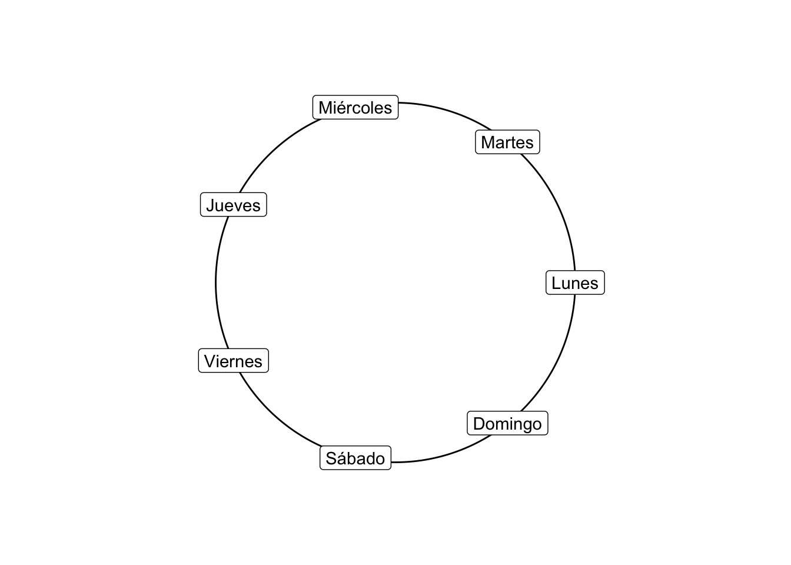
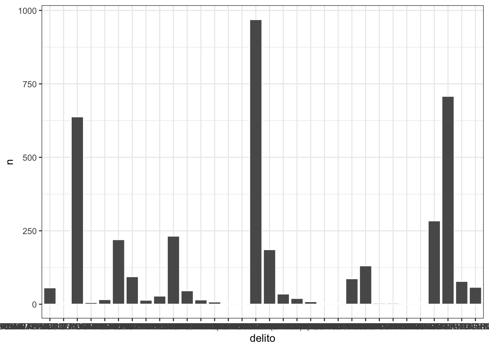
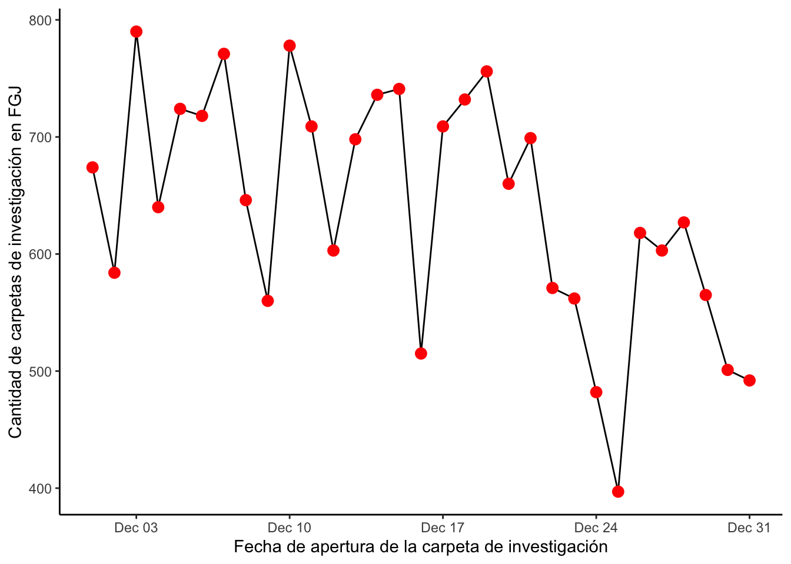
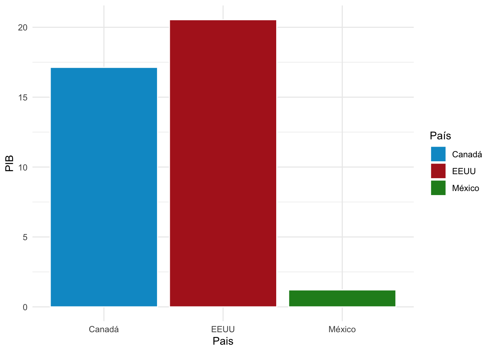
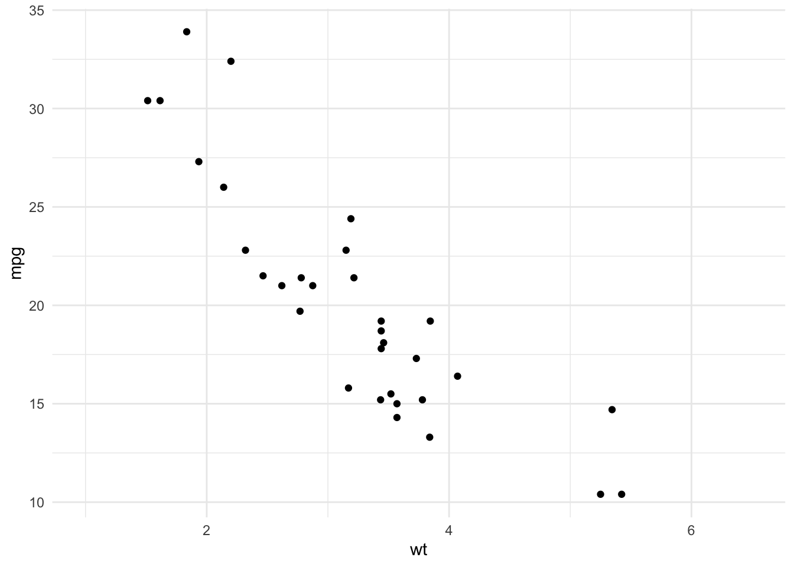
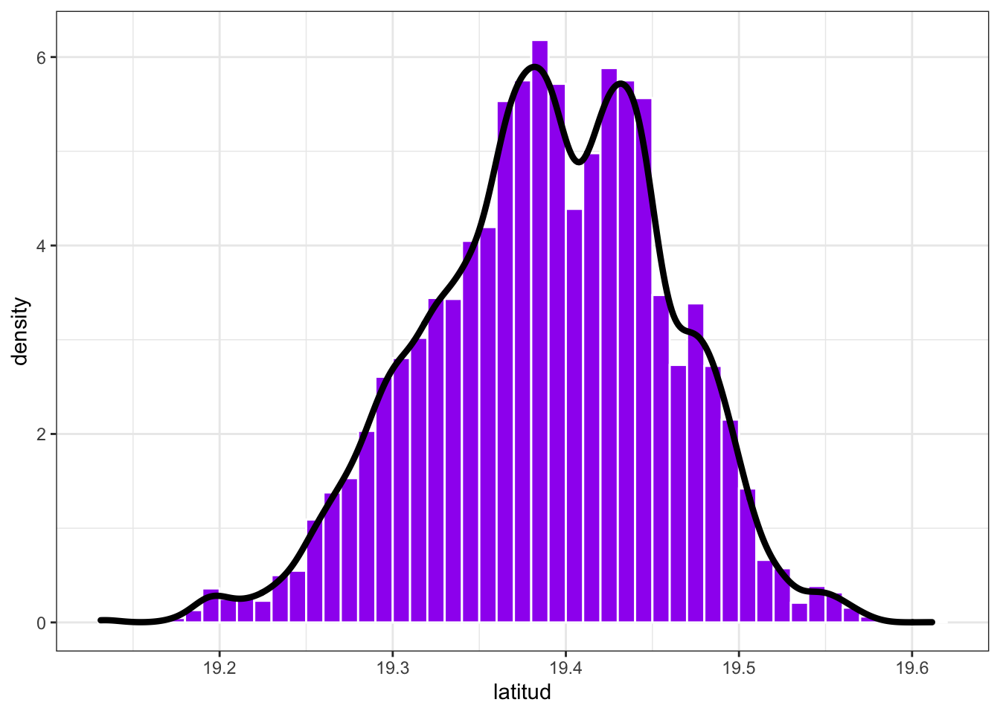
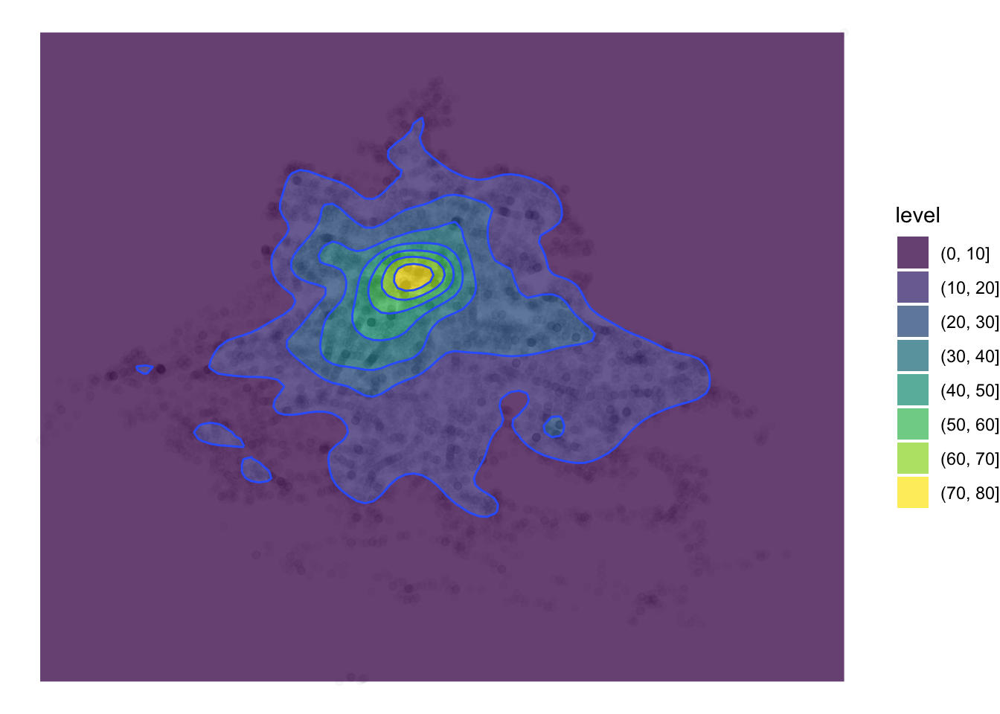
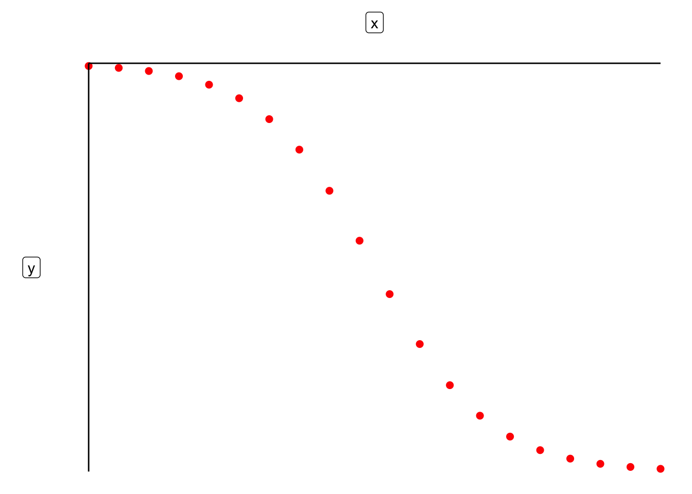
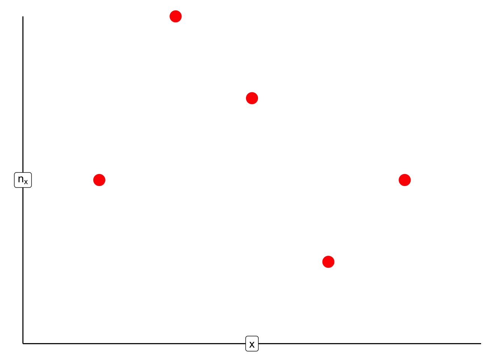

Capítulo 2 Análisis Exploratorio de Datos
2.1 Inicio
Siempre que inicies un nuevo trabajo en R ¡no olvides borrar el historial!
2.2 Librerías
Para este análisis vamos a tener que llamar a las siguientes librerías previamente instaladas (por única vez) con install.packages:
library(tidyverse)
library(dplyr)
library(moments)
library(lubridate)
library(ggcorrplot)
library(ks)Si no tienes una librería puedes instalarla escribiendo en la consola el install junto con su nombre:
2.3 Base a analizar
Como ejemplo analizaremos la base de Carpetas de Investigación de la Fiscalía General de Justicia de la CDMX para el año 2018 y mes de Diciembre misma que se encuentra en este link
Si el link anterior no abre ve al sitio https://datos.cdmx.gob.mx/explore/dataset/carpetas-de-investigacion-pgj-cdmx/table/?refine.ao_hechos=2018 y elige la opción de año 2018, mes diciembre y descargar como csv.
La forma más fácil en RStudio es yéndonos a Import Dataset en el panel derecho seguido de From Text y seleccionamos el archivo. En este caso hay dos opciones cualquiera de las dos opciones funciona: si en tu ordenador no sirve una, ¡prueba la otra!
En mi caso el archivo está en una carpeta que se llama datasets y se lee de la siguiente manera:
2.4 Definiciones y notación
Siguiendo la definición de Gelman et al. (2013) , denotamos el conjunto de datos observados como la matriz (base de datos) de \(n \times \ell\) \[ Z = \begin{pmatrix} z_1 \Big| z_2 \Big| \dots \Big| z_{\ell} \end{pmatrix} \] donde \(\ell \in \mathbb{N}\) con \(\ell > 0\) y las \(z_i\) sin pérdida de generalidad, son vectores columna de longitud \(n\) (\(z_i = (z_{i,1}, z_{i,2}, \dots, z_{i,n})^T\)). Una columna \(z_{k}\) con \(0 \leq k \leq \ell\) se le conoce como:
Numérica si \(z_{k} \in \mathbb{R}^{n}\). En particular es entera si \(z_{j} \in \mathbb{Z}^{n}\).
Categórica si cada entrada de \(z_{k}\) es una indicadora de pertenencia a algún conjunto (por ejemplo
Hombre / MujeróIngresos Altos / Ingresos Medios / Ingresos Bajos). Usualmente \(z_{k}\) se representa con un caracter o con un entero. Una variable cateórica puede ser lógica si \(z_{k}\) es un indicador que toma alguno de los dos valores: TRUE ó FALSE.Ordinal Una variable ordinal es aquél \(z_{k} \in \mathcal{C}\) donde sobre \(\mathcal{C}\) existe un orden total; es decir si \(x,y,w\in z_{k}\) se tiene que:
- Ocurre al menos una de las siguientes: \(x \leq y\) ó \(x \geq y\).
- Si \(x \leq y\) y \(y \geq w\) entonces \(x \leq w\)
- Si \(x \leq y\) y \(x \geq y\) entonces \(x = y\). Variables numéricas univariadas son ordinales por el orden natural de \(\mathbb{R}\).
Caracter si \(z_{k}\) es un caracter o una cadena de caracteres donde los caracteres son el objeto de análisis en sí (no como pertenencia). Por ejemplo si cada entrada \(z_{k,m}\) representa un Tweet.
OJO Los datos \(z_{k,m}\) son variables fijas ya dadas y NO SON ALEATORIAS.
En el caso de nuestra base de datos podemos resumir la información contenida en la misma mediante glimpse:
## Rows: 19,861
## Columns: 18
## $ año_hechos <int> 2018, 2018, 2018, 2018, 2018, 2018, 2018, 2018, …
## $ mes_hechos <chr> "Diciembre", "Diciembre", "Diciembre", "Diciembr…
## $ fecha_hechos <chr> "2018-12-13 12:00:00", "2018-12-22 19:00:00", "2…
## $ delito <chr> "USURPACIÓN DE IDENTIDAD", "SUSTRACCION DE MENOR…
## $ categoria_delito <chr> "DELITO DE BAJO IMPACTO", "DELITO DE BAJO IMPACT…
## $ fiscalía <chr> "INVESTIGACIÓN EN MIGUEL HIDALGO", "INVESTIGACIÓ…
## $ agencia <chr> "MH-2", "59", "BJ-1", "IZP-9", "75TER", "FDS-5",…
## $ unidad_investigacion <chr> "UI-1SD", "UI-1CD", "UI-1SD", "UI-2SD", "3 S/D",…
## $ colonia_hechos <chr> "LOMAS DE SOTELO", NA, "DEL VALLE CENTRO", "AMPL…
## $ alcaldia_hechos <chr> "MIGUEL HIDALGO", "CUAUTLA", "BENITO JUAREZ", "I…
## $ fecha_inicio <chr> "2019-06-16 12:14:09", "2019-06-06 16:26:15", "2…
## $ mes_inicio <chr> "Junio", "Junio", "Febrero", "Febrero", "Abril",…
## $ ao_inicio <int> 2019, 2019, 2019, 2019, 2019, 2019, 2019, 2019, …
## $ calle_hechos <chr> "AV. CONSCRIPTO", "AVENIDFA DIEZ DE MARZO", "FEL…
## $ calle_hechos2 <chr> ".", "HECHOS EN CUAUTLA MORELOS", "ESQUINA COYOA…
## $ longitud <dbl> -99.22535, NA, -99.17088, -99.03016, -99.13423, …
## $ latitud <dbl> 19.44028, NA, 19.37207, 19.34797, 19.54788, 19.3…
## $ Geopoint <chr> "19.4402832543,-99.2253527208", "", "19.37206828…Notamos que el vector columna año_hechos es una variable numérica mientras que mes_hechos es categórica. No hay variables lógicas en esta base. Una variable caracter es el vector columna calle_hechos que no denota un conjunto sino una cadena de caracteres (véanse las faltas de ortografía, por ejemplo).
Al ser la tabla de datos una matriz podemos acceder a la entrada en la fila \(j\) y columna \(k\) haciendo: \[ \textrm{base}[j,k] \] por ejemplo:
## [1] "INVESTIGACIÓN EN IZTAPALAPA"NOTACIÓN Para facilitar la notación en lo que sigue de estas notas y hasta nuevo aviso, si \(z_k\) es una columna categórica de \(Z\) denotaremos a los elementos de dicha columna como \(C = (c_1, c_2, \dots, c_n) = z_k^T\). Si \(z_k\) es numérica denotamos a los elementos de dicha columna como \(\vec{x} = (x_1, x_2, \dots, x_n) = z_k^T\).
2.5 Estadísticos univariados
2.5.1 Definición [Estadístico]
Un estadístico es una función cuyo dominio es la matriz de datos observados \(Z\) o una columna de la misma. Es decir, un estadístico es cualquier función de los datos (ver Wolfe and Schneider (2017)).
A continuación veremos algunos ejemplos de estadísticos así como su interpretación.
1. Media poblacional Dado un vector de datos numéricos \(\vec{x} = (x_1, x_2, \dots, x_n)^T\) definimos la media poblacional como:
\[
\bar{x} = \dfrac{1}{n} \sum\limits_{i=1}^{n} x_i, \qquad x_i \in \mathbb{R}
\]
En el caso de nuestros datos podemos calcular el promedio de delitos por día como sigue. Primero necesitamos especificar a R que la fecha_hechos es una fecha. Esto lo hacemos mediante la función ymd_hms (year-month-day_hour-minute-second) del paquete de lubridate y la función mutate (que cambia una columna de la base de datos). El siguiente código le indica a R que cambie la columna fecha_hechos volviéndola a leer como fecha:
Para mantener sólo la fecha y eliminar la hora de fecha_hechos podemos generar una nueva columna como sigue:
Finalmente podemos contar (tally) observaciones agrupadas (group_by) por día mediante la combinación de ambas funciones:
## # A tibble: 6 x 2
## fecha n
## <date> <int>
## 1 2018-12-01 674
## 2 2018-12-02 584
## 3 2018-12-03 790
## 4 2018-12-04 640
## 5 2018-12-05 724
## 6 2018-12-06 718Hay distintas formas de calcular la media. La primera es tomando la columna directo, para acceder a una columna utilizamos el signo de pesos \(\$\) como sigue: \[ \texttt{base} \texttt{\$} \texttt{columna} \]
En nuestro caso:
## [1] 640.6774O bien podemos usar la función summarise integrada en dplyr:
## # A tibble: 1 x 1
## `mean(n)`
## <dbl>
## 1 641.NOTA Una media como está descrita arriba no aplica para datos circulares. Por ejemplo, si queremos determinar el mes promedio en el que ocurren las lluvias dentro de los años se sabe que después del mes 12 continúa el mes 1 del próximo año. Una media tradicional no considera datos que pueden ser descritos mediante aritmética modular (como los meses). Para ello se utiliza la media circular:
1.1 Media circular Consideremos el problema de determinar el día promedio de la semana en que más ocurren delitos (de Lunes a Domingo). Podemos resumir los eventos usando la función weekdays:
datos <- datos %>% mutate(`Día de la Semana` = weekdays(fecha))
conteo.dia <- datos %>% group_by(`Día de la Semana`) %>% count()de donde se tiene el conteo:
| Día de la Semana | n |
|---|---|
| Monday | 3251 |
| Saturday | 3197 |
| Friday | 2833 |
| Sunday | 2722 |
| Wednesday | 2701 |
| Thursday | 2679 |
| Tuesday | 2478 |
Para obtener el día promedio representamos cada uno de los días en el círculo usando coordenadas polares. Nota que el radio es irrelevante en este caso: sólo el ángulo importa; de ahí que tomemos \(r = 1\):

Para un conjunto de mediciones con ángulos \((\theta_1, \theta_2, \dots, \theta_n)^T\) el centro de masa asociado a dichas mediciones es el punto \((\bar{c}, \bar{s})\) donde \[ \bar{c} = \frac{1}{n}\sum\limits_{i = 1}^n \cos (\theta_i) \qquad \text{y} \qquad \bar{s} = \frac{1}{n}\sum\limits_{i = 1}^n \sin (\theta_i) \] La dirección media se define como la solución \(\bar{\theta}\) (si \(\bar{r} > 0\)) a: \[ \bar{c} = \bar{r}\cos\bar{\theta} \qquad \text{ y } \qquad \bar{s} = \bar{r}\sin\bar{\theta} \] donde \(\bar{r}\) se conoce como la longitud resultante promedio . Si \(\bar{r} = 0\) no existe dirección media. De manera explícita, por geometría tenemos que: \[ \bar{r} = (\bar{c}^2 + \bar{s}^2)^{1/2} \] y que: \[ \bar{\theta} = \text{atan2}(\bar{s}/\bar{c}) = \begin{cases} \text{atan}(\bar{s}/\bar{c}) & \text{ si } \bar{c} \geq 0\\ \text{atan}(\bar{s}/\bar{c}) + \pi & \text{ si } \bar{c} < 0\\ \end{cases} \] donde el caso \(\bar{c} = 0\) se interpreta como el límite por la derecha (respectivamente por la izquierda) de la arcotangente de acuerdo con el signo de \(\bar{s}\).
Para más información sobre estadística circular puedes consultar Pewsey, Neuhäuser, and Ruxton (2013)
2.6 Ejercicio
Utiliza la función atan2 de R junto con cos y sin para seno y coseno para estimar el día promedio en el que ocurren más delitos según la base conteo.dia.
2. Total poblacional (ver Särndal, Swensson, and Wretman (2003)) Dado un vector de datos numéricos \(\vec{x} = (x_1, x_2, \dots, x_n)^T\) definimos el total poblacional como:
\[ t_{\vec{x}} = \sum\limits_{i=1}^{n} x_i, \qquad x_i \in \mathbb{R} \] En este caso de las carpetas de investigación el total nos daría todas las carpetas abiertas durante diciembre. Para ello calculamos el total sumando todos los elementos:
## [1] 19861O bien (y esto es una de las cosas interesantes de tidyverse) agregándolo a los cálculos previos:
## # A tibble: 1 x 2
## `mean(n)` `sum(n)`
## <dbl> <int>
## 1 641. 198613. Varianza poblacional (no ajustada) Dado un vector de datos numéricos \(\vec{x} = (x_1, x_2, \dots, x_n)^T\) definimos la varianza poblacional como1:
\[
\sigma^2_{\vec{x}} = \dfrac{1}{n} \sum\limits_{i=1}^{n} (x_i - \bar{x})^2, \qquad x_i \in \mathbb{R}
\]
Misma que podemos calcular con el comando var ya sea directamente en la columna:
## [1] 10046.23O bien a través del summarise integrando con el anterior:
## # A tibble: 1 x 3
## `mean(n)` `sum(n)` `var(n)`
## <dbl> <int> <dbl>
## 1 641. 19861 10046.La raíz cuadrada de la varianza se conoce como desviación estándar y se denota como sigue: \[ \sigma_{\vec{x}} = \sqrt{\sigma^2_{\vec{x}}} \]
Recuerda que la varianza se interpreta como la distancia cuadrática promedio a la que están los datos. En particular la varianza casi no considera valores que están a menos de \(1\) de distancia de \(\bar{x}\) (pues \((x_i - \bar{x})^2 < 1\) en ese caso) pero le da mayor peso a valores que están muy lejanos (donde \((x_i - \bar{x})^2 \gg 1\) si \(x_i\) está muy lejos de \(\bar{x}\)). Gráficamente:

Si nos interesara que todos los valores (tanto los cercanos a \(\bar{x}\) como los lejanos) pesaran de manera idéntica entonces usaríamos el MAD:
3.1 Varianza angular (circular) En el caso de datos circulares, Pewsey, Neuhäuser, and Ruxton (2013) define la varianza circular como: \[ \textrm{Var} = 1 - \bar{r} \] donde \(\bar{r} = (\bar{c}^2 + \bar{s}^2)^{1/2}\) es el resolvente explicado anteriormente.
4. Desviación Media Absoluta (MAD) Dado un vector de datos numéricos \(\vec{x} = (x_1, x_2, \dots, x_n)^T\) definimos la desviación media absoluta, MAD, como (Panaretos (2016)): \[ \text{MAD}_{\vec{x}} = \frac{1}{n} \sum\limits_{i=1}^{n} | x_i - \bar{x} | \]
Misma que se puede calcular en R como:
## [1] 114.6385o bien dentro del summarise:
## # A tibble: 1 x 4
## `mean(n)` `sum(n)` `var(n)` `mad(n, center = mean(n))`
## <dbl> <int> <dbl> <dbl>
## 1 641. 19861 10046. 115.La MAD también es una forma de medir distancia pero en este caso se tiene que todos aportan por igual los muy alejados y los que no:

Para pensarle: En el caso de una variable que se supone que es uniforme y no interesa penalizar valores lejanos de la media ¿cuál sería una mejor manera de cuantificar la dispersión MAD ó varianza? ¿en qué casos importaría la otra?
Las siguientes dos definiciones son con base en conceptos de proba. ¿Los recuerdas?
5. Coeficiente de asimetría Dado un vector de datos numéricos \(\vec{x} = (x_1, x_2, \dots, x_n)^T\) definimos el coeficiente de asimetría de Fisher (skewness) como: \[ \text{Skewness}_{\vec{x}} = \frac{1}{n \sigma^3_{\vec{x}} } \sum\limits_{i = 1}^{n} (x_i - \bar{x})^3 \]
Para más referencias ver Panaretos (2016). A fin de interpretar el coeficiente de asimetría podemos dividir esa suma en dos pedazos (olvidándonos de la constante): \[ \sum\limits_{i = 1}^{n} (x_i - \bar{x})^3 = \underbrace{\sum\limits_{\substack{i = 1 \\ \\ x_i > \bar{x}}}^{n} (x_i - \bar{x})^3}_{\text{A}} + \underbrace{\sum\limits_{\substack{i = 1 \\ \\ x_i < \bar{x}}}^{n} (x_i - \bar{x})^3}_{\text{B}} \] Notamos que si \(|A| > |B|\) la mayor parte de las \(x_i\) (o las que se alejan más de la media) son mayores a \(\bar{x}\) y por tanto los datos van a estar sesgados a la derecha:. Por otro lado si \(|B| > |A|\) significa que hay más \(x_i\) (o con mayor peso) del lado izquierdo de la media que del lado derecho de la misma y por tanto los datos están sesgados a la izquierda. Datos insesgados son aquellos donde \(\text{Skewness}_{\vec{x}} = 0\).
 En el caso de las carpetas podemos calcular la asimetría que no se encuentra preprogramada en R como sigue:
En el caso de las carpetas podemos calcular la asimetría que no se encuentra preprogramada en R como sigue:
#Estimación de la desviación estándar
desv.est <- sd(conteo_delitos$n)
#Estimación del x barra
x.barra <- mean(conteo_delitos$n)
#Obtención de la n (longitud del vector)
n.longitud <- length(conteo_delitos$n)
#Cálculo de la asimetría
(1/desv.est^3)*mean((conteo_delitos$n - x.barra)^3)## [1] -0.4528209¿Qué implica el resultado anterior?
6. Curtosis Dado el mismo vector \(\vec{x}\) que en el enunciado anterior el coeficiente de curtosis se define como
\[ \text{Curtosis}_{\vec{x}} = \frac{1}{n \sigma^4_{\vec{x}} } \sum\limits_{i = 1}^{n} (x_i - \bar{x})^4 \]
La interpretación de la curtosis es similar a la que hicimos de la varianza en el sentido que el elevar a la cuarta va a magnificar los efectos de aquellos valores que estén a más de \(\sigma\) de distancia de la media pues podemos reescribir la suma como:
\[
\frac{1}{n \sigma^4_{\vec{x}} } \sum\limits_{i = 1}^{n} (x_i - \bar{x})^4 = \frac{1}{n \sigma^4_{\vec{x}} } \underbrace{\sum\limits_{\substack{i = 1 \\ \\ | x_i - \bar{x}| < \sigma}}^{n} (x_i - \bar{x})^4}_{\text{A}} + \frac{1}{n \sigma^4_{\vec{x}} } \underbrace{\sum\limits_{\substack{i = 1 \\ \\ | x_i - \bar{x}| > \sigma}}^{n} (x_i - \bar{x})^4}_{\text{B}}
\]
Notamos que la única parte importante que apota a la curtosis es la dada por B que es la que capta las colas de la distribución (pues ese lado es \(\gg 1\)) . De ahí que podamos decir que, entre dos vectores de datos, uno tiene colas más pesadas que el otro si su curtosis es mayor. En este caso podemos analizar la latitud y longitud de los datos a través de la curtosis:
## kurtosis(latitud, na.rm = T) kurtosis(longitud, na.rm = T)
## 1 2.857934 3.045037donde se agregó el comando na.rm = T para eliminar los valores de no respuesta (missing) marcados como NA. Del análisis notamos que la longitud tiene colas más pesadas que la latitud.
NOTACIÓN Dado un vector \(\vec{x} = (x_1, x_2, \dots, x_n)^T\) de valores numéricos denotamos el \(j\)-ésimo valor muestral (\(1 \leq j \leq n\)) como \(x_{(j)}\) tal que \(x_{(1)} = \min \{ x_1, x_2, \dots, x_n \}\) y \[ x_{(j)} = \min \{ x_1, x_2, \dots, x_n \} \setminus \{ x_{(1)}, x_{(2)}, \dots, x_{(j-1)} \} \] Es decir \(x_{(j)}\) es el valor en orden \(j\) al momento de ordenar la muestra. Como nota adicional se define \(x_{(0)} = 0\) y \(x_{(n+1)} = 0\).
Nota La curtosis a veces se define con un denominador distinto (en términos de las \(n\)) como en Myatt and Johnson (2007).
7. Mediana Dado un vector de valores numéricos \(\vec{x} = (x_1, x_2, \dots, x_n)^T\) definimos la mediana como (Panaretos (2016)): \[ \text{Mediana}_{\vec{x}} = \dfrac{x_{(\lfloor \frac{n+1}{2} \rfloor)} + x_{(\lceil \frac{n+1}{2} \rceil)}}{2} \] La mediana puede calcularse fácilmente haciendo:
## [1] 6468. Cuantil Dado un vector de valores numéricos \(\vec{x} = (x_1, x_2, \dots, x_n)^T\) el \(\alpha\)-ésimo cuantil está dado por:
\[
\text{Cuantil}_{\vec{x}}(\alpha) = \dfrac{x_{(\lfloor \alpha\cdot (n+1) \rfloor)} + x_{(\lceil \alpha\cdot (n+1)\rceil)}}{2}
\]
donde \(x_{(0)} = x_{(n+1)} = 0\). R no calcula los cuantiles de manera exacta sino que por velocidad los aproxima mediante la función quantile. Por ejemplo en el cálculo de los cuantiles \(\alpha = 0.1\) y \(\alpha = 0.66\):
## # A tibble: 2 x 1
## `quantile(n, c(0.1, 0.66))`
## <dbl>
## 1 501
## 2 707La función summary también es bastante útil resumiendo múltiples observaciones de la base:
## Min. 1st Qu. Median Mean 3rd Qu. Max.
## 397.0 568.0 646.0 640.7 721.0 790.0Ésta incluye los cuartiles los cuales corresponden a los cuantiles asociados a \(\alpha =0.25, 0.5, 0.75\) y \(1\).
Nota Hay múltiples definiciones de cuantil (ver Hyndman and Fan (1996) para un intento de homologación). En particular
Rutiliza una distinta y tus cómputos no van a coincidir si lo haces con esta definición y con la deR. Si quieres saber más deRconsulta?quantile
9. Rango intercuartílico Definimos el rango intercuartílico (Panaretos (2016)) para valores numèricos \(\vec{x} = (x_1, x_2, \dots, x_n)^T\) como la distancia entre el cuantil \(0.75\) y el \(0.25\) (primer y tercer cuartil): \[ \text{IQR}_{\vec{x}} = \text{Cuantil}_{\vec{x}}(0.75) - \text{Cuantil}_{\vec{x}}(0.25) \]
## [1] 15310. Valores atípicos (outliers) Dado un vector de datos numéricos \(\vec{x} = (x_1, x_2, \dots, x_n)^T\) seguimos a Panaretos (2016) para definir los valores atípicos outliers como aquellas observaciones: \[ \textrm{Outliers}_{\vec{x}} = \Big\{ x_i \in \vec{x} \big| x_i \not\in \big[ \text{Cuantil}_{\vec{x}}(0.25) - \frac{3}{2} \text{IQR}_{\vec{x}}, \text{Cuantil}_{\vec{x}}(0.75) + \frac{3}{2} \text{IQR}_{\vec{x}}\big] \Big\} \] Los outliers en esta definción son valores que serían verdaderamente improbables bajo una distribución normal.

Particularmente en el caso de la normal los outliers son valores que tienen una probabilidad de salir aproximadamente de 0.0069766 (por eso son atípicos porque no se esperaría que aparecieran nunca).
Para identificar los outliers calculamos el IQR primero y los cuartiles:
iqr <- IQR(conteo_delitos$n)
cuartil1 <- quantile(conteo_delitos$n, 0.25)
cuartil3 <- quantile(conteo_delitos$n, 0.75)después identificamos el límite inferior y superior del conjunto
finalmente preguntamos por cuáles están antes o después:
En este caso no tenemos outliers.
NOTA Según la aplicación que tenemos la definición de outlier cambia. La actual es la que se utiliza para datos que pudieran ser descritos mediante una Normal; empero, no siempre esta definición de outlier es un buen modelo (por ejemplo en datos como ingreso que son cantidades positivas, con mucha asimetría y cola pesada). Un buen tratamiento sobre los outliers puedes encontrarlo en SURI, Murty, and Athithan (2019).
11. Rango El rango (Peck, Olsen, and Devore (2015)) se define como la diferencia entre el mínimo y el máximo de los valores de un vector numérico \(\vec{x} = (x_1, x_2, \dots, x_n)^T\):
\[
\textrm{Rango}_{\vec{x}} = \max \{x_1, x_2, \dots, x_n\} - \min \{x_1, x_2, \dots, x_n\}
\]
En R puede calcularse con la resta:
#Obtenemos máximo y mínimo
maximo <- max(conteo_delitos$n)
minimo <- min(conteo_delitos$n)
#Rango
maximo - minimo## [1] 393Nota En algunos casos el rango se refiere al intervalo \([a,b]\) de valores donde \(a = \min \{x_1, x_2, \dots, x_n\}\) y \(b = \max \{x_1, x_2, \dots, x_n\}\). Éste es el caso de la función
rangeenR:
## [1] 397 79012. Conteo asociado a un conjunto Sea \(\vec{y} = (y_1, y_2, \dots, y_n)^T\) un vector de datos de cualquier tipo (numéricos, categóricos, lógicos, caracteres, etc). Para un conjunto \(A\) definimos el conteo asociado al conjunto \(A\) como: \[ \text{Conteo}_{\vec{y}}(A) = \sum\limits_{i = 1}^{n} \mathbb{I}_A (y_i) \] donde \[ \mathbb{I}_A (y) = \begin{cases} 1 & \text{ si } y \in A, \\ 0 & \text{ en otro caso }, \end{cases} \] es una variable indicadora.
Una forma rápida de obtener dicho conteo en R es mediante table:
##
## ABANDONO DE PERSONA ABORTO ABUSO DE AUTORIDAD ABUSO DE CONFIANZA
## 53 15 102 276
## ABUSO SEXUAL ACOSO SEXUAL
## 252 30O bien si se desean contar en la base de datos por ejemplo los delitos de ABANDONO DE PERSONA pueden hacerse mediante un filtro.
## n
## 1 53Al filtro pueden agregárseles grupos por si se desea obtener por fecha:
## # A tibble: 21 x 2
## fecha n
## <date> <int>
## 1 2018-12-01 3
## 2 2018-12-02 3
## 3 2018-12-04 2
## 4 2018-12-05 8
## 5 2018-12-06 1
## 6 2018-12-07 1
## 7 2018-12-10 1
## 8 2018-12-12 2
## 9 2018-12-13 3
## 10 2018-12-14 2
## # … with 11 more rowsEl filtro funciona igual que un if pudiéndose usar (&) u (|):
datos %>%
filter(delito == "ABANDONO DE PERSONA" | delito == "ABORTO") %>%
group_by(fecha) %>% tally()## # A tibble: 25 x 2
## fecha n
## <date> <int>
## 1 2018-12-01 3
## 2 2018-12-02 3
## 3 2018-12-04 5
## 4 2018-12-05 8
## 5 2018-12-06 1
## 6 2018-12-07 2
## 7 2018-12-10 1
## 8 2018-12-12 2
## 9 2018-12-13 4
## 10 2018-12-14 2
## # … with 15 more rowsdatos %>%
filter(delito == "ABANDONO DE PERSONA" &
fiscalía == "INVESTIGACIÓN EN IZTAPALAPA") %>%
group_by(fecha) %>% tally()## # A tibble: 3 x 2
## fecha n
## <date> <int>
## 1 2018-12-02 1
## 2 2018-12-13 1
## 3 2018-12-20 113. Moda En términos simples, la moda es el conjunto de los valores que más se repiten. Matemáticamente (ver Peck, Olsen, and Devore (2015)) la moda es el conjunto \(\textrm{Moda}_{\vec{y}} = \{ m_1, m_2, \dots, m_k \}\) tal que \(m \in \textrm{Moda}\) sí y sólo si \[ \sum_{i = 1}^{n} \mathbb{I}_{\{m\}}(y_i) \geq \sum_{i = 1}^{n} \mathbb{I}_{\{ \ell\}}(y_i) \qquad \forall \ell \neq m \textrm{ donde } y_i \in \vec{y}. \]
Para calcularla en R no existe una función predefinida para calcular la moda. Nosotros podemos crearla con el comando function. El término function nos sirve para construir funciones; por ejemplo, una función que eleva al cuadrado:
Observa la estructura que siempre será de esta forma:
nombre de la función <- function(parámetro, otro parámetro){
#Lo que sea que haga
return(lo que devuelve)
}Podemos llamar a la función con un número:
## [1] 64o bien con un vector:
## [1] 144En nuestro caso vamos a crear una función que se llame moda para estimar la moda:
#Función para estimar la moda de un vector x
moda <- function(x){
#Contar cuántas veces aparecen las observaciones
conteo <- table(x)
#Obtengo el máximo que aparece
max_aparece <- max(conteo)
#Busco cuáles aparecen más y obtengo los nombres
moda <- names(conteo)[which(conteo == max_aparece)]
#Finalmente checo que si los datos eran numéricos moda debe
#ser numérico
if (is.numeric(x)){
moda <- as.numeric(moda)
}
return(moda)
}Podemos probar nuestra función con datos que ya sepamos su resultado nada más para asegurarnos que funciona:
#Creamos un vector numérico con dos modas
vector.ejemplo.1 <- c(1,6,6,1,2,7,8,10)
moda(vector.ejemplo.1)## [1] 1 6Podemos probarlo también con caracteres:
#Creamos un vector numérico con dos modas
vector.ejemplo.2 <- c("manzana","pera","guayaba","perejil","manzana")
moda(vector.ejemplo.2)## [1] "manzana"Una vez sabemos funciona podemos buscar el delito que ocurrió más:
## [1] "VIOLENCIA FAMILIAR"2.7 Ejercicios
- Construye una función que tome de input dos variables: \(x\) un vector y \(k\) un entero de tal manera que calcule el \(k\)-ésimo momento central de los datos: \[ \text{Momento}_{\vec{x}}(k) = \frac{1}{n} \sum\limits_{i=1}^n (x_i - \bar{x})^k \] La función debe tener la siguiente estructura:
Sin usar la opción de
trimnitrimmed.meancrea una función que calcule la media de los datos que están entre el cuantil \(\alpha/2\) y el cuantil \(1 - \alpha/2\) (\(0 \leq \alpha \leq 1\). A esta media se le conoce como media truncada al nivel \(\alpha \times 100\%\). Matemáticamente se define como: \[ \textrm{Media Truncada}_{\vec{x}}(\alpha) = \frac{1}{n_\alpha} \sum\limits_{i = 1}^{n} x_i \cdot \mathbb{I}_{[q_{\alpha/2}, q_{1-\alpha/2}]}(x_i) \] donde \(n_{\alpha} = \sum_{i=1}^n \mathbb{I}_{[q_{\alpha/2}, q_{1-\alpha/2}]}(x_i)\) es la cantidad de \(x_i\) que están en el intervalo \([q_{\alpha/2}, q_{1-\alpha/2}]\) donde \(q_{\alpha/2} = \text{Cuantil}_{\vec{x}}(\alpha/2)\) y \(q_{1 - \alpha/2} = \text{Cuantil}_{\vec{x}}(1 - \alpha/2)\).Una función llamada
jesimo.datode dos argumentos que dado un vector de datos \(\vec{x}\) me devuelva el \(j\)-ésimo dato ordenado (es decir el \(x_{(j)}\)). NOTA No confundir con devolver el \(x_j\) que es la \(j\)-ésima entrada. Como sugerencia usararrange,orderósort. Un ejemplo de lo que debe hacer la función es:
## [1] 122.8 Gráficas univariadas
1. Gráfica de caja (boxplot) Una gráfica de caja pretende resumir los cuartiles, la mediana e identificar los outliers todo en una sola imagen (Panaretos (2016)). Para ello considera un vector numérico \(\vec{x} = (x_1, x_2, \dots, x_n)^T\) tal que:
- \(q_1\) sea el primer cuartil (\(\textrm{Cuantil}_{\vec{x}}(0.25)\)), \(q_2\) sea la mediana (que es lo mismo que el segundo cuartil o bien \(\textrm{Cuantil}_{\vec{x}}(0.5)\)) y \(q_3\) corresponda al tercer cuartil (\(\textrm{Cuantil}_{\vec{x}}(0.75)\)).
- \(w_1 = \min \{x_j \in \vec{x} | x_j \geq q_1 - \frac{3}{2} IQR \}\) es el valor más pequeño de \(\vec{x}\) que no es outlier y \(w_2 = \max \{x_j \in \vec{x} | x_j \leq q_3 + \frac{3}{2} IQR \}\) es el valor más grande de \(\vec{x}\) que no es outlier.
- Sea \(\textrm{Outliers}_{\vec{x}}\) el conjunto de outliers como lo definimos anteriormente: \[ \textrm{Outliers}_{\vec{x}} = \Big\{ x_i \in \vec{x} \big| x_i \not\in \big[ q_1 - \frac{3}{2} \text{IQR}_{\vec{x}}, q_3 + \frac{3}{2} \text{IQR}_{\vec{x}}\big] \Big\} \] donde \(\textrm{Outliers}_{\vec{x}} = \{ o_1, o_2, \dots, o_d \}\). Una gráfica de caja corresponde al siguiente diagrama:

La imagen anota la mediana, los cuartiles así como el rango de valores donde se sabe que no hay outliers. Finalmente la gráfica identifica los outliers si es que hay. Para armar una gráfica de boxplot usamos la librería de ggplot2 especificando dentro de la función ggplot la base de datos de donde sale nuestra información:

la cual pone la mediana en 646 como habíamos calculado, los cuartiles en 568 y 721 respectivamente. Finalmente no presenta outliers pues nuestro análisis previo nos mostraba que no había outliers.
Podemos personalizar nuestra gráfica agregando títulos con la función lab:
ggplot(conteo_delitos) +
geom_boxplot(aes(x = n)) +
labs(
x = "Cantidad de carpetas de investigación abiertas por día",
y = "",
title = "Gráfica de cajas de los delitos en CDMX",
subtitle = "Fuente: Carpetas de investigación FGJ de la Ciudad de México",
caption = "Datos de Diciembre 2018"
) Finalmente, podemos personalizar los colores de la gráfica editando directamente en el
Finalmente, podemos personalizar los colores de la gráfica editando directamente en el geom_boxplot:
ggplot(conteo_delitos) +
geom_boxplot(aes(x = n), color = "red", fill = "deepskyblue4") +
labs(
x = "Cantidad de carpetas de investigación abiertas por día",
y = "",
title = "Gráfica de cajas de los delitos en CDMX",
subtitle = "Fuente: Carpetas de investigación FGJ de la Ciudad de México",
caption = "Datos de Diciembre 2018"
)
2. Gráfica de barras Sea \(\vec{c} = (c_1, c_2, \dots, c_n)^T\) un vector de datos categóricos. Sea \(C = \{ a_i | a_i \in \vec{c} \}\) el conjunto de \(\ell\) valores únicos que se tienen registrados en el vector \(\vec{c}\). Denotamos la cantidad de veces que aparece \(a_i\) en \(\vec{c}\) como \(n_i\); es decir:
\[ n_i = \sum\limits_{k = 1}^n \mathbb{I}_{\{a_i\}}(c_k) \]
Una gráfica de barras consiste en una representación gráfica del conjunto: \[ \text{Barras} = \{ (a_i, n_i) | a_i \in C \} \] Gráficamente:

Podemos crear una gráfica de barras con el comando geom_col para ello creemos unas barras correspondientes al tipo de delito (sólo en delitos que categoria_delito dice ROBO) haciendo una nueva base que cuente por delito:
conteo_tipo <- datos %>% filter(str_detect(categoria_delito,"ROBO")) %>%
group_by(delito) %>% tally()Y hagamos la gráfica:

Para evitar que se encime todo el texto podemos establecer un ángulo del mismo al usar theme:
ggplot(conteo_tipo) +
geom_col(aes(x = delito, y = n), color = "white") +
theme_bw() +
theme(axis.text.x = element_text(angle = 90, size = 3))
NOTA Una mala praxis es usar gráficas de pay pues es muy complicado contar una historia a partir de ellas. ¡No lo hagas!
2.9 Gráficas bivariadas
1. Gráfica de puntos (scatterplot) Dada una matriz de datos \(Z\) consideramos dos columnas numéricas \(z_i\) y \(z_j\) (\(i \neq j\)) de dicha matriz. Sea \(\mathbb{X} = \{ (z_{i,1}, z_{j,1}), (z_{i,2}, z_{j,2}), \dots, (z_{i,n}, z_{j,n}) \}\) el conjunto de parejas ordenadas correspondientes a dichas columnas. Una gráfica de puntos consiste en la proyección de dichos puntos sobre \(\mathbb{R}^2\). Para generarla en R podemos usar ggplot:
 donde los parámetros
donde los parámetros size establecen el tamaño del punto, color su color y alpha su nivel de transparencia (\(0 \leq \alpha \leq 1\)).
2. Gráfica de líneas (lineplot) Dada una matriz de datos \(Z\) consideramos dos columnas numéricas \(z_i\) y \(z_j\) (\(i \neq j\)) de dicha matriz. Sea \(\mathbb{X} = \{ (z_{i,1}, z_{j,1}), (z_{i,2}, z_{j,2}), \dots, (z_{i,n}, z_{j,n}) \}\) el conjunto de parejas ordenadas correspondientes a dichas columnas. Para evitar confusión de subíndices escribiré a las \(z_i\) como \(x\) y a las \(z_j\) como \(y\) de tal forma que \(\mathbb{X} = \{ (x_1, y_1), (x_2, y_2), \dots, (x_n, y_n) \}\) Supongamos, sin pérdida de generalidad que los datos están ordenados según las \(x\): \(x_1 \leq x_2 \leq \dots \leq x_n\). Sea \(f\) la función de interpolación lineal dada por: \[ f(x) = \begin{cases} y_1 + \frac{y_2 - y_1}{x_2 - x_1} (x -x_1) & \text{ si } x_1 \leq x \leq x_2 \\ \vdots \\ y_{k-1} + \frac{y_k - y_{k-1}}{x_k - x_{k-1}} (x -x_{k-1}) & \text{ si } x_{k-1} \leq x \leq x_k \\ \vdots \\ y_{n-1} + \frac{y_{n} - y_{n-1}}{x_n - x_{n-1}} (x -x_{n-1}) & \text{ si } x_{n-1} \leq x \leq x_n \\ \end{cases} \] Una gráfica de líneas corresponde a la representación gráfica del conjunto \[ \textrm{Gr}_f = \Big\{ \big(x, f(x)\big) | x_1 \leq x \leq x_n \Big\} \] De manera un poco más intuitiva notamos que si tenemos, por ejemplo, \(\mathbb{X} = \{(x_1, y_1),(x_2, y_2), (x_3, y_3), (x_4, y_4)\}\) una gráfica de líneas se construye interpolando una línea entre \((x_1, y_1)\) y \((x_2, y_2)\), otra línea entre \((x_2, y_2)\) y \((x_3, y_3)\) y, finalmente, otra recta entre \((x_3, y_3)\) y \((x_4, y_4)\). Usando la ecuación de la línea \[ y = \frac{y_2 - y_1}{x_2 - x_1} (x - x_1) + y_1 \] interpolamos cada uno de los puntos como en la gráfica siguiente:
 Para realizar una gráfica de líneas podemos usar de nuevo ggplot2 con la opción de
Para realizar una gráfica de líneas podemos usar de nuevo ggplot2 con la opción de geom_line:

Podemos cambiar el tema y agregar puntos de otro color para que nuestra gráfica se vea más bonita:
ggplot(conteo_delitos) +
geom_line(aes(x = fecha, y = n)) +
geom_point(aes(x = fecha, y = n), color = "red", size = 3) +
theme_classic() +
labs(
x = "Fecha de apertura de la carpeta de investigación",
y = "Cantidad de carpetas de investigación en FGJ"
) Finalmente con
Finalmente con geom_label podemos agregar anotaciones a nuestra gráfica:
ggplot(conteo_delitos) +
geom_line(aes(x = fecha, y = n)) +
geom_point(aes(x = fecha, y = n), color = "red", size = 3) +
theme_classic() +
labs(
x = "Fecha de apertura de la carpeta de investigación",
y = "Cantidad de carpetas de investigación en FGJ"
) +
geom_label(aes(x = dmy("25/12/2018"), y = 425), label = "Efecto de Navidad")
2.9.1 Ejercicio
Utiliza las siguiente bases de datos para replicar exactamente el formato de las gráficas que se muestran abajo de las bases. No todo viene en estas notas, la idea es que investigues y para ello te sugiero consultar este libro
Gráfica de barras
Los colores usados son firebrick, deepskyblue3 y forestgreen:
 Línea

Boxplot

Puntos
datos.arbol <- data.frame(altura = c(1.7, 1.4, 1.8, 1.9, 1.5, 1.7,
1.6, 1.8, 1.7, 1.8),
ancho = c(1.2, 1.4, 1.2, 1, 1.5, 1.7, 1.6,
1.2, 1.2, 1),
tipo = c("Pino","Sauce","Sauce","Sauce","Pino",
"Pino","Pino","Sauce","Sauce","Sauce"))
2.10 Estadísticos bivariados
NOTACIÓN Para esta sección vamos a considerar dos (vectores) columnas de la matriz de datos \(Z\) y los denominaremos \(\vec{x}\) y \(\vec{y}\) (en lugar de \(z_i\) y \(z_j\)). En particular, denotaremos \(\mathcal{X} = \{ a_{i, x } | a_{i,x} \in \vec{x} \}\) el conjunto de valores únicos del vector \(\vec{x}\) y \(\mathcal{Y} = \{ a_{y ,j} | a_{y ,j} \in \vec{y} \}\) el conjunto de valores únicos de \(\vec{y}\). La cardinalidad de dichos conjuntos es \(\ell_{x}\) y \(\ell_{y}\) respectivamente. Finalmente, definimos el conteo de cuántas veces aparece el valor \(a_{i,x }\) (respectivamente el \(a_{y ,j}\)) en los vectores \(\vec{x}\) (respectivamente \(\vec{y}\)) como: \[\begin{equation} \begin{aligned} n_{i,x } & = \sum\limits_{k=1}^{n} \mathbb{I}_{\{ a_{i,x } \}}(x_k) \\ n_{y ,j} & = \sum\limits_{k=1}^{n} \mathbb{I}_{\{ a_{y ,j} \}}(y_k) \end{aligned} \end{equation}\] para \(1 \leq i \leq \ell_{x}\) y \(1 \leq j \leq \ell_{y}\).
Por poner un ejemplo, considera el siguiente conjunto de datos:
x y Rojo Coche Azul Taza Verde Árbol Rojo Taza Verde Libro En este sentido el vector es \(\vec{x} = (\text{Rojo},\text{Azul},\text{Verde},\text{Rojo},\text{Verde})^T\) mientras que el conjunto de valores únicos asociados está dado por \(\mathcal{X} = \{ \text{Rojo},\text{Azul},\text{Verde} \}\). En este sentido (siguiendo el conjunto) se tiene que \(a_{1,x} = \text{Rojo}\), \(a_{2,x} = \text{Azul}\) y \(a_{3,x } = \text{Verde}\) mientras que (siguiendo el vector) se observa \(x_1 = \text{Rojo}\), \(x_2 = \text{Azul}\), \(x_3 = \text{Verde}\), \(x_4 = \text{Rojo}\), \(x_5 = \text{Verde}\). Finalmente notamos que el conteo de veces que aparece cada cosa es: \(n_{1,x} = 2\) (aparece el \(a_{1, x}\) que es rojo dos veces), \(n_{2,x} = 1\) y \(n_{3,x } = 2\) (el azul y verde dados por \(a_{2,x}\) y \(a_{3,x}\) respectivamente aparecen una vez para azul y dos veces para verde). Por otro lado, \(\vec{y} = (\text{Coche},\text{Taza},\text{Árbol},\text{Taza},\text{Libro})^T\) con su conjunto de valores únicos \(\mathcal{Y} = \{ \text{Coche},\text{Taza},\text{Árbol}, \text{Libro} \}\). Para el caso de \(\vec{y}\) se tiene que \(y_1 = \text{Coche}\), \(y_2 = \text{Taza}\), \(y_3 = \text{Árbol}\), \(y_4 = \text{Taza}\), \(y_5 = \text{Libro}\) mientras que en el caso de valores únicos \(a_{y, 1} = \text{Coche}\), \(a_{y, 2} = \text{Taza}\), \(a_{y, 3} = \text{Árbol}\), \(a_{\cdot, 4} = \text{Libro}\). Los conteos asociados son: \(n_{y,1} = n_{y,3} = n_{y,4} = 1\) (aparecen el coche, el árbol y el libro una vez) mientras que \(n_{y,2} = 2\) representa que la taza está dos veces.
Por otro lado denotamos a la submatriz de \(Z\) compuesta solamente por las columnas \(\vec{x}\) y \(\vec{y}\) como:
\[ Z_{(x,y)} = \begin{pmatrix} x_1 & y_1 \\ x_2 & y_2 \\ \vdots & \vdots \\ x_n & y_n \\ \end{pmatrix} \] Sea \(\mathcal{X}\times\mathcal{Y} = \{ a_{i,j} = (x_i,y_j) | x_i \in \mathcal{X} \quad \& \quad y_j \in \mathcal{Y}\}\) el conjunto de observaciones únicas posibles de las parejas \((x,y)\) (todas las permutaciones). Finalmente, el conteo de cuántas veces aparece el vector bivariado \(a_{i,j}\) en los datos está dado por: \[ n_{i,j} = \sum\limits_{k = 1}^{n} \mathbb{I}_{\{ a_{i,j} \}}\big( (x_k, y_k) \big) \] En el ejemplo anterior, la tabla se vería:
## Warning: Setting row names on a tibble is deprecated.| Coche | Taza | Árbol | Libro | Total (fila) | |
|---|---|---|---|---|---|
| Rojo | 1 | 1 | 0 | 0 | 2 |
| Azul | 0 | 1 | 0 | 0 | 1 |
| Verde | 0 | 0 | 1 | 1 | 2 |
| Total (columna) | 1 | 2 | 1 | 1 | 5 |
Una excelente referencia para esta sección es el capítulo 4 de Peck, Olsen, and Devore (2015).
1. Tabla de contingencia Para \(\vec{x}\), \(\vec{y}\) definidas como al inicio de la sección (y siguiendo la notación anterior), definimos una tabla de contingencia como la matriz \(N_{x,y}\) dada por: \[ N_{x,y} = \begin{pmatrix} n_{1,1} & n_{1,2} & \dots & n_{1, \ell_y} \\ n_{2,1} & n_{2,2} & \dots & n_{2, \ell_y} \\ \vdots & \vdots & \ddots & \vdots \\ n_{\ell_x,1} & n_{\ell_x,2} & \dots & n_{\ell_x, \ell_y} \\ \end{pmatrix} \] Al vector \(n_x = (n_{1,x}, n_{2,x}, \dots, n_{\ell_x,x})^T\) se le conoce como distribución frecuencial (observada) marginal de \(\vec{x}\) mientras que \(n_y = (n_{y,1}, n_{y,2}, \dots, n_{y,\ell_y})^T\) es la distribución frecuencial (observada) marginal de \(\vec{y}\).
Una tabla de contingencia representa el conteo de observaciones de una variable ajustado por la otra. Para crear una tabla de contingencia en R podemos usar el mismo comando table que ya usamos antes pero esta vez introduciendo dos vectores como en el siguiente ejemplo donde notamos alcaldía contra año del registo:
##
## 2018 2019
## VERACRUZ 0 1
## VILLAGRAN 1 0
## XALATLACO 2 0
## XOCHIMILCO 465 115
## XOCHITEPEC 1 0
## ZACATECAS 0 2Para agregar las distribuciones frecuenciales marginales a la tabla podemos usar el comando addmargins:
##
## 2018 2019 Sum
## VILLAGRAN 1 0 1
## XALATLACO 2 0 2
## XOCHIMILCO 465 115 580
## XOCHITEPEC 1 0 1
## ZACATECAS 0 2 2
## Sum 15952 3896 198482. Tabla de frecuencias
Una tabla de frecuencia es la matriz \(\text{Freq}_{x,y}\) dada por: \[ \text{Freq}_{x,y} = \begin{pmatrix} f_{1,1} & f_{1,2} & \dots & f_{1, \ell_y} \\ f_{2,1} & f_{2,2} & \dots & f_{2, \ell_y} \\ \vdots & \vdots & \ddots & \vdots \\ f_{\ell_x,1} & f_{\ell_x,2} & \dots & f_{\ell_x, \ell_y} \\ \end{pmatrix} \]
donde \(f_{i,j} = \frac{n_{i,j}}{n}\) representa la frecuencia relativa de la observación de \((a_{i,x}, a_{y,j})\) i.e. cuánto representa del total. Al vector \(f_{x} = (f_{1,x}, f_{2,x}, \dots, f_{\ell_x,x})^T\) se le conoce como la distribución frecuencial marginal relativa de \(\vec{x}\). Análogamente para \(y\) se tiene la distribución frecuencial marginal relativa de \(\vec{y}\) dada por: \(f_{y} = (f_{y,1}, f_{y,2}, \dots, f_{y,\ell_y})^T\). Las entradas de dichos vectores son de la forma \(f_{i,x} = n_{i,x}/n\) y \(f_{y,j} = n_{y,j}/n\).
En R podemos obtener las frecuencias mediante prop.table:
##
## 2018 2019
## VERACRUZ 0.000000e+00 5.038291e-05
## VILLAGRAN 5.038291e-05 0.000000e+00
## XALATLACO 1.007658e-04 0.000000e+00
## XOCHIMILCO 2.342805e-02 5.794035e-03
## XOCHITEPEC 5.038291e-05 0.000000e+00
## ZACATECAS 0.000000e+00 1.007658e-04Así mismo, podemos agregar las marginales:
##
## 2018 2019 Sum
## VILLAGRAN 5.038291e-05 0.000000e+00 5.038291e-05
## XALATLACO 1.007658e-04 0.000000e+00 1.007658e-04
## XOCHIMILCO 2.342805e-02 5.794035e-03 2.922209e-02
## XOCHITEPEC 5.038291e-05 0.000000e+00 5.038291e-05
## ZACATECAS 0.000000e+00 1.007658e-04 1.007658e-04
## Sum 8.037082e-01 1.962918e-01 1.000000e+003. Riesgo Relativo (discreto) Para definir Riesgo Relativo empezaremos por un ejemplo. Tomamos la tabla donde se guardó un registro de personas según si fumaban o no así como si dichas personas desarrollaron o no enfisema pulmonar.
## Warning: Setting row names on a tibble is deprecated.| FUMA | NO FUMA | |
|---|---|---|
| Con enfisema | 100 | 40 |
| Sin enfisema | 30 | 50 |
Si quisiéramos analizar la hipótesis de que FUMAR está asociado con ENFISEMA tendríamos que ver, dentro de la población de fumadores (FUMAR = SÍ) cuántos hay (proporcionalmente) con ENFISEMA. La hipótesis es que si no hubiera relación, saldría que las proporciones de fumadores con y sin enfisema serían \(50\%\) cada una. La proporción de fumadores con enfisema está dada por \(100/130\) mientras que la de no fumadores con enfisema es \(40/90\). El riesgo relativo (intuitivamente). se define como la división entre ambas proporciones: \[ \text{Riesgo Relativo de Enfisema} = \dfrac{\frac{\text{Expuestos enfermos}}{\text{Total de expuestos}}}{\frac{\text{No Expuestos enfermos}}{\text{Total de no expuestos}}} = \dfrac{100/130}{40/90} \approx 1.73 \] Lo que se interpreta como que los fumadores tienen \(1.73\) veces más riesgo de desarrollar enfisema que los no fumadores ya que si despejamos de la fórmula anterior: \[ \frac{\text{Expuestos enfermos}}{\text{Total de expuestos}} \approx 1.73 \times \frac{\text{No Expuestos enfermos}}{\text{Total de no expuestos}} \] De manera general, dadas dos vectores lógicos \(\vec{x}\) (interpretada como el resultado) y \(\vec{y}\) (interpretada como la exposición) con una tabla de contingencia y frecuencias marginales dadas por la tabla:
## Warning: Setting row names on a tibble is deprecated.| Expuesto (y) | NO expuesto (y) | |
|---|---|---|
| Resultado (x) | a | b |
| Sin resultado (x) | c | d |
definimos el riesgo relativo de \(\vec{x}\) dado \(\vec{y}\) como: \[ RR(\vec{x}|\vec{y}) = \dfrac{\frac{a}{a + c}}{\frac{b}{b + d}} \] Mientras que el riesgo relativo de no \(\vec{x}\) dado \(\vec{y}\) está dado por: \[ RR(\neg \vec{x}|\vec{y}) = \dfrac{\frac{c}{a + c}}{\frac{d}{b + d}} \]
La base de datos de los delitos no contiene información suficiente para poder calcular un riesgo relativo pero podemos crear la base de datos correspondiente a la tabla como sigue:
Podemos agregar nombres a las filas para tener la base de datos mejor:
La tabla se ve así:
## SI_FUMA NO_FUMA
## ENFISEMA 100 40
## NO_ENFISEMA 30 50Luego el riesgo relativo de ENFISEMA está dado por:
numerador <- fumadores["ENFISEMA","SI_FUMA"]/sum(fumadores$SI_FUMA)
denominador <- fumadores["ENFISEMA","NO_FUMA"]/sum(fumadores$NO_FUMA)
rr <- numerador/denominador #El riesgo relativo
rr## [1] 1.730769Por otro lado, el riesgo relativo de no enfisema es:
numerador <- fumadores["NO_ENFISEMA","SI_FUMA"]/sum(fumadores$SI_FUMA)
denominador <- fumadores["NO_ENFISEMA","NO_FUMA"]/sum(fumadores$NO_FUMA)
rr_neg <- numerador/denominador #El riesgo relativo
rr_neg## [1] 0.4153846Éste último se interpreta como si la proporción de individuos sin enfisema es \(0.41\) veces más pequeña entre fumadores que no fumadores.
4. Razón de momios (discreto)
Para dos vectores lógicos \(\vec{x}\) y \(\vec{y}\) definimos la razón de momios como:
\[
\textrm{OR}(\vec{x}|\vec{y}) =\dfrac{RR(\vec{x}|\vec{y})}{RR(\neg\vec{x}|\vec{y})}
\]
Podemos calcular en R la razón de momios a partir de los datos:
donde la razón de momios de 4.17 se interpreta como “si un individuo tiene enfisema, la factibilidad de que dicho individuo sea fumador es 4.17 veces más alta”. Esta interpretación se obtiene a partir de un despeje y sustitución: \[\begin{equation}\nonumber \begin{aligned} RR(\vec{x}|\vec{y}) & = 4.16 \cdot RR(\neg\vec{x}|\vec{y}) \\ \\ \Leftrightarrow \dfrac{\frac{\text{Expuestos enfermos}}{\text{Total de expuestos}}}{\frac{\text{No Expuestos enfermos}}{\text{Total de no expuestos}}} & = 4.16 \cdot \dfrac{\frac{\text{Expuestos no enfermos}}{\text{Total de expuestos}}}{\frac{\text{No Expuestos no enfermos}}{\text{Total de no expuestos}}} \\ \\ \Leftrightarrow \frac{\text{Expuestos enfermos}}{\text{No Expuestos enfermos}} & = 4.16\cdot \frac{\text{Expuestos no enfermos}}{\text{No Expuestos no enfermos}} \\ \\ \Leftrightarrow \frac{\text{Expuestos enfermos}}{\text{Expuestos no enfermos}} & = 4.16\cdot \frac{\text{No Expuestos enfermos}}{\text{No Expuestos no enfermos}} \end{aligned} \end{equation}\]
5. Correlación (Bravais-Pearson) Sean \(\vec{x}\) y \(\vec{y}\) dos vectores columa numéricos de nuestra matriz de datos \(Z\). Tomemos \(\tilde{x} = (x_1 - \bar{x}, x_2 - \bar{x}, \dots, x_n - \bar{x})\) la versión centrada de \(\vec{x}\) y \(\tilde{y} = (y_1 - \bar{y}, y_2 - \bar{y}, \dots, y_n - \bar{y})\) la versión centrada de \(\vec{y}\). Al coseno entre dichos vectores (bajo el producto punto) se le conoce como correlación de Bravais-Pearson y se le denota \(\rho_{\vec{x},\vec{y}}\). Es decir: \[ \rho_{\vec{x},\vec{y}} = \cos(\tilde{x},\tilde{y}) = \dfrac{\tilde{x} \cdot \tilde{y}}{\|\tilde{x}\| \cdot \|\tilde{y}\|} \] donde \(\tilde{x}\cdot\tilde{y} = \sum_{i=1}^{n} (x_i - \bar{x}) \cdot (y_i - \bar{y})\) representa el producto de los vectores \(\tilde{x}\) y \(\tilde{y}\) y se conoce como covarianza entre \(\vec{x}\) y \(\vec{y}\). Por otro lado, \[ \|\tilde{x}\| = \sqrt{\sum\limits_{i=1}^{n} (x_i - \bar{x})^2} = \sigma_{\vec{x}} \] Por tanto la correlación también puede medirse como: \[ \rho_{\vec{x},\vec{y}} = \cos(\tilde{x},\tilde{y}) = \frac{1}{\sigma_{\vec{y}} \sigma_{\vec{x}}}\sum\limits_{i=1}^{n} (x_i - \bar{x}) \cdot (y_i - \bar{y}) \]
Para matriz de datos \(Z\) con \(\ell\) columnas, definimos la matriz de correlaciones \(\mathcal{C}\) como la matriz dada por: \[ \mathcal{C} = \begin{pmatrix} \rho(z_1,z_1) & \rho(z_1,z_2) & \dots & \rho(z_1,z_{\ell}) \\ \rho(z_2,z_1) & \rho(z_2,z_2) & \dots & \rho(z_2,z_{\ell}) \\ \vdots & \vdots & \ddots & \vdots \\ \rho(z_{\ell},z_1) & \rho(z_{\ell},z_2) & \dots & \rho(z_{\ell},z_{\ell}) \end{pmatrix} \] Donde notamos (demuestra) que \(\rho(z_i, z_i) = 1\).
Podemos usar la base mtcars precargada en R para analizar las correlaciones:
La base está explicada en la ayuda de R:
Podemos obtener la correlación entre el número de millas por galón mpg y el peso del automóvil wt haciendo:
## [1] -0.8676594Esta correlación se interpreta como que por cada aumento en el peso corresponde una disminución en las millas por galón. Podemos ver gráficamente que esto es así:
 Para obtener toda la matriz de correlaciones de la base podemos tomar
Para obtener toda la matriz de correlaciones de la base podemos tomar cor aplicado a toda la base de datos:
## mpg cyl disp hp drat wt
## mpg 1.0000000 -0.8521620 -0.8475514 -0.7761684 0.68117191 -0.8676594
## cyl -0.8521620 1.0000000 0.9020329 0.8324475 -0.69993811 0.7824958
## disp -0.8475514 0.9020329 1.0000000 0.7909486 -0.71021393 0.8879799
## hp -0.7761684 0.8324475 0.7909486 1.0000000 -0.44875912 0.6587479
## drat 0.6811719 -0.6999381 -0.7102139 -0.4487591 1.00000000 -0.7124406
## wt -0.8676594 0.7824958 0.8879799 0.6587479 -0.71244065 1.0000000
## qsec 0.4186840 -0.5912421 -0.4336979 -0.7082234 0.09120476 -0.1747159
## vs 0.6640389 -0.8108118 -0.7104159 -0.7230967 0.44027846 -0.5549157
## am 0.5998324 -0.5226070 -0.5912270 -0.2432043 0.71271113 -0.6924953
## gear 0.4802848 -0.4926866 -0.5555692 -0.1257043 0.69961013 -0.5832870
## carb -0.5509251 0.5269883 0.3949769 0.7498125 -0.09078980 0.4276059
## qsec vs am gear carb
## mpg 0.41868403 0.6640389 0.59983243 0.4802848 -0.55092507
## cyl -0.59124207 -0.8108118 -0.52260705 -0.4926866 0.52698829
## disp -0.43369788 -0.7104159 -0.59122704 -0.5555692 0.39497686
## hp -0.70822339 -0.7230967 -0.24320426 -0.1257043 0.74981247
## drat 0.09120476 0.4402785 0.71271113 0.6996101 -0.09078980
## wt -0.17471588 -0.5549157 -0.69249526 -0.5832870 0.42760594
## qsec 1.00000000 0.7445354 -0.22986086 -0.2126822 -0.65624923
## vs 0.74453544 1.0000000 0.16834512 0.2060233 -0.56960714
## am -0.22986086 0.1683451 1.00000000 0.7940588 0.05753435
## gear -0.21268223 0.2060233 0.79405876 1.0000000 0.27407284
## carb -0.65624923 -0.5696071 0.05753435 0.2740728 1.00000000Finalmente, el paquete ggcorrplot puede ayudarnos a visualizar gráficamente dicha matriz:
ggcorrplot(cor(datos.coches, method = "pearson"),
lab = TRUE,
type = "upper") +
labs(title = "Matriz de Correlaciones")
Una correlación de Pearson igual a \(1\) ó \(-1\) se interpreta como que hay una relación lineal perfecta mientras que una correlación igual a \(0\) se interpreta como que no hay relación lineal (aunque puede existir de otro tipo)
Gráficamente:

El valor en este caso de la correlación es:
## [1] 1Mientras que por otro lado podemos tener variables relacionadas pero sin correlación :
#Ejemplo sin correlación lineal pero con variables relacionadas
x <- seq(-4, 4,length.out = 9)
y <- x^2
cor(x,y, method = "pearson")## [1] 0
6. Correlación de rango de Spearman Para hablar de la correlación de rango de Spearman es necesario definir una variable como ordinal.
Un vector \(\vec{x} = (x_1, x_2, \dots, x_n)^T\) de variables numéricas o categóricas es ordinal si existe una relación \(\leq\) de orden total sobre los elementos del vector tal que:
Es antisimétrica: si \(x_i \leq x_j\) y \(x_j \leq x_i\) entonces \(x_i = x_j\).
Es transitiva: si \(x_i \leq x_j\) y \(x_j \leq x_k\) entonces \(x_i \leq x_k\).
Es conexa: \(x_i \leq x_j\) ó \(x_j \leq x_i\).
De manera intuitiva un vector es ordinal si hay un orden para sus entradas. Por ejemplo, cuando calificas un servicio como Malo \(\leq\) Regular \(\leq\) Bueno o bien cuando se compara nivel educativo (en términos de años) Primaria \(\leq\) Secundaria \(\leq\) Preparatoria \(\leq\) Educación superior. Toda variable numérica es ordinal.
Para un vector ordinal definimos su ordenamiento como \(x_{(1)} = \min \{ x_1, x_2, \dots, x_n \}\) y \(x_{(j)} = \min \{ x_1, x_2, \dots, x_n \} \setminus \{ x_{(1)}, x_{(2)}, \dots, x_{(j-1)} \}\) de tal forma que \(x_{(1)} \leq x_{(2)} \leq \dots \leq x_{(n)}\). El rango de \(x_{(j)}\) denotado como \(R(x_{(j)})\) es \(j\) (su posición en el ordenamiento). Es decir: \[ R(x_i) = j \Leftrightarrow x_i = x_{(j)} \]
Dado un vector \(\vec{x}\) definimos su vector de rango como:
\[ R(\vec{x}) = \big( R(x_1), R(x_2), \dots, R(x_n) )^T \]
Para dos variables ordinales, \(\vec{x}\) y \(\vec{y}\) se define la correlación de rango de Spearman como la correlación de Pearson entre sus vectores de rangos:
\[ \rho_{\text{Spearman}} =\rho\big( R(\vec{x}), R(\vec{y})) \]
Mientras que la correlación de Pearson mide linealidad; la de Spearman mide monotonicidad (que si una aumenta la otra también; que si una disminuye la otra también).
#Comparativo de correlaciones: la de Pearson no encuentra mucha línea
x <- seq(0.1, 1, length.out = 25)
y <- exp(1/x^2)
En este caso la correlación de Pearson es muy mala:
## [1] -0.3396831Mientras que la de Spearman sí muestra la relación:
## [1] -17. \(\tau\) de Kendall Consideremos \(\vec{x}\) y \(\vec{y}\) dos vectores columna ordinales de una matriz de datos \(Z\). Para cualquier par de observaciones \((x_i, y_i)\) y \((x_j, y_j)\) con \(i < j\) decimos que dos observaciones son concordantes (\(c\)) si los rangos de ambas \(x\) y \(y\) coinciden; es decir si se cumple una de las siguientes:
\(R(x_i) < R(x_j)\) y \(R(y_i) < R(y_j)\) o bien,
\(R(x_i) > R(x_j)\) y \(R(y_i) > R(y_j)\).
Observaciones discordantes (\(d\)) ocurren cuando los rangos de las \(x\) y las \(y\) son inversos el uno del otro; es decir, se cumple una de las siguientes:
\(R(x_i) > R(x_j)\) y \(R(y_i) < R(y_j)\) o bien,
\(R(x_i) < R(x_j)\) y \(R(y_i) > R(y_j)\).
En el caso que cualquiera de las dos, \(x\) ó \(y\) sean igualdades (\(x_i = x_j\) ó \(y_i = y_j\)) no son discordantes ni concordantes.
Observa que existen \(\binom{n}{2}\) distintos pares de \((x_i,y_i)\) y \((x_j,y_j)\) para comparar. Sea \(c_{\vec{x},\vec{y}}\) la cantidad de pares concordantes y \(d_{\vec{x},\vec{y}}\) la cantidad de pares discordantes. Luego la probabilidad de que dos pares seleccionados de manera uniforme sean concordantes es: \[ \dfrac{c_{\vec{x},\vec{y}}}{\binom{n}{2}} \] mientras que la probabilidad de que dos pares seleccionados uniformemente sean discordantes es: \[ \dfrac{d_{\vec{x},\vec{y}}}{\binom{n}{2}}. \]
Definimos entonces la \(\tau\) de Kendall como la diferencia entre ambas probabilidades empíricas: \[ \tau_{\vec{x},\vec{y}} = \dfrac{c_{\vec{x},\vec{y}} - d_{\vec{x},\vec{y}}}{\binom{n}{2}} \] La tau de Kendall cumple que: \[ -1 \leq \tau_{\vec{x},\vec{y}} \leq 1 \] donde el \(-1\) se alcanza sólo si son completamente discordantes (el rango de \(x\) es el inverso del rango de las \(y\)) y el \(1\) si son completamente concordantes (el rango de \(x\) y de \(y\) tienen el mismo orden). Una \(\tau\) cercana a cero se interpreta como ausencia de relación en los rangos.
Podemos aplicar la tau de Kendall a la siguiente base de datos que contiene la calificación de dos servicios de un restaurante:
| calidad_alimentos | calidad_servicio |
|---|---|
| Malo | 1 estrella |
| Bueno | 4 estrellas |
| Bueno | 5 estrellas |
| Regular | 2 estrellas |
| Bueno | 5 estrellas |
| Bueno | 4 estrellas |
Para ello codificamos las variables como factor diciéndole que son variables ordinales order = TRUE e indicando el orden de los niveles:
calidad_alimentos <- factor(c("Malo","Bueno","Bueno","Regular","Bueno","Bueno"),
order = TRUE,
levels = c("Malo","Regular","Bueno"))
calidad_servicio <- factor(c("1 estrella", "4 estrellas", "5 estrellas",
"2 estrellas", "5 estrellas","4 estrellas"),
order = TRUE,
levels = c("1 estrella","2 estrellas","3 estrellas",
"4 estrellas","5 estrellas"))Esto de las variables ordinales permite hacer comparaciones ordinales, por ejemplo:
## [1] TRUELos datos se ven así:

Finalmente, calculamos la \(\tau\) de Kendall, para ello es necesario obtener el rango de nuestras variables ordinales:
rango_alimentos <- as.numeric(calidad_alimentos)
rango_servicio <- as.numeric(calidad_servicio)
cor(rango_alimentos, rango_servicio, method = "kendall")## [1] 0.8320503Lo cual indica que hay una relación entre la calificación de calidad de alimentos y la del servicio.
8. Ajuste de modelo lineal
Sean \(\vec{x}\) y \(\vec{y}\) dos vectores columna de una matriz de datos \(Z\). Supongamos, además, se tiene la hipótesis de que existe una relación afín entre los vectores; es decir que: \[ \vec{y} \approx \beta_1 \vec{x} + \beta_0 \vec{1} \] donde \(\vec{1} = (1, 1, \dots, 1)^T\) es un vector con todas las entradas idénticas a \(1\) y \(\beta_0, \beta_1 \in \mathbb{R}\). Algunas razónes para tener esta hipótesis podría ser una correlación de Pearson cercana a \(\pm 1\) o por inspección gráfica. Esta hipótesis implica que: \[ y \approx \underbrace{\beta_1 x + \beta_0}_{\hat{y}} \] Podemos entonces trazar la línea \(y = \beta_0 + \beta_1 x\) y graficar contra los puntos \(\{(x_i,y_i)\}_{i=1}^{n}\), Si la línea no ajusta perfecto tendremos errores \(e_i = (y_i - \hat{y}_i)^2\) de predicción las cuales representan la diferencia entre la \(y\) observada (\(y_i\)) y la \(y\) predicha por la línea \(\hat{y}_i = \beta_1 x_i + \beta_0\). La suma de estos errores es: \[ \textrm{SSR}(\beta_0, \beta_1) = \sum\limits_{i=1}^{n} e_i = \sum\limits_{i=1}^{n} \big( y_i - \hat{y}_i \big)^2 = \sum\limits_{i=1}^{n} \big( y_i - (\beta_1 x_i + \beta_0) \big)^2 \]
El nombre de SSR es por ( Sum of Squared Residuals ) dado que en estadística se define un residual como \(r_i = (y_i - \hat{y}_i)\) Gráficamente:

Lo que se busca entonces es minimizar el error respecto a las constantes a determinar: \(\beta_0\) y \(\beta_1\). Para ello buscamos un punto de inflexión derivando: \[ \dfrac{\partial\textrm{SSR}}{\partial \beta_0} = \sum\limits_{i=1}^{n} 2\big(y_i - (\beta_1 x_i + \beta_0 ) \big) = 0 \]
De donde se sigue que: \[ \sum\limits_{i=1}^n y_i - \beta_1 \sum\limits_{i=1}^{n} x_i - n \beta_0 = 0 \Rightarrow \beta_0 = \dfrac{1}{n} \sum\limits_{i=1}^n y_i - \beta_1 \dfrac{1}{n} \sum\limits_{i=1}^n x_i \Rightarrow \bar{y} - \beta_1 \bar{x}, \]
de donde concluimos que de cumplirse la relación lineal se tiene que: \[ \beta_0 = \bar{y} - \beta_1 \bar{x}. \]
Por otro lado, la derivada respecto a \(\beta_1\) es: \[ \dfrac{\partial\textrm{SSR}}{\partial \beta_1} = - \sum\limits_{i=1}^{n} 2\big(y_i - (\beta_1 x_i + \beta_0 ) \big) \cdot x_i = 0 \]
De donde se sigue (si suponemos que existe al menos un \(x_i \neq 0\)): \[\begin{equation}\nonumber \begin{aligned} 0 & = - \sum\limits_{i=1}^n \Big( x_i y_i - \beta_1 x_i^2 - \underbrace{\beta_0}_{\bar{y} - \beta_1 \bar{x}} x_i \Big) \\ & = \sum\limits_{i=1}^n \Big( x_i y_i - \beta_1 x_i^2 - \bar{y}x_i + \beta_1 \bar{x} x_i \Big) \\ & = \sum\limits_{i=1}^n \Big( y_i + \beta_1 x_i - \bar{y} - \beta_1 \bar{x} \Big) x_i \\ & = \sum\limits_{i=1}^n \Big( y_i - \bar{y} \Big) x_i - \beta_1 \sum\limits_{i=1}^n\Big( x_i - \bar{x} \Big) x_i \end{aligned} \end{equation}\] de donde se sigue (suponiendo que existen \(i,j\) tales que \(x_i \neq x_j\) que: \[ \beta_1 = \dfrac{\sum_{i=1}^n \Big( y_i - \bar{y} \Big)x_i}{\sum_{i=1}^n\Big( x_i - \bar{x} \Big)x_i} = \dfrac{\sum_{i=1}^n \Big( y_i - \bar{y} \Big)\Big( x_i - \bar{x} \Big)}{\sum_{i=1}^n\Big( x_i - \bar{x} \Big)^2} = \dfrac{\sigma_{\vec{x}} \cdot \sigma_{\vec{y}} \cdot \rho_{\vec{x},\vec{y}}}{n \sigma_{\vec{x}}^2} \] por lo cual: \[ \beta_1 = \dfrac{\sigma_{\vec{y}}}{\sigma_{\vec{x}}} \cdot \dfrac{\rho_{\vec{x},\vec{y}}}{n} \]
De donde se tienen las fórmulas para el \(\beta_0\) y \(\beta_1\).
2.10.1 Ejercicio
Demuestra la igualdad que usamos anteriormente:
\[ \dfrac{\sum_{i=1}^n \Big( y_i - \bar{y} \Big) x_i}{\sum_{i=1}^n\Big( x_i - \bar{x} \Big)x_i} = \dfrac{\sum_{i=1}^n \Big( y_i - \bar{y} \Big)\Big( x_i - \bar{x} \Big)}{\sum_{i=1}^n\Big( x_i - \bar{x} \Big)^2} \]
En R podemos ajustar un modelo lineal para dos variables de una base de datos con lm:
## (Intercept) wt
## 37.285126 -5.344472Gráficamente podemos ver el modelo:
ggplot(datos.coches) +
geom_point(aes(y = mpg, x = wt)) +
geom_smooth(aes(y = mpg, x = wt), method = "lm",
formula = y ~ x, se = FALSE) +
theme_minimal()
Para predecir, dada una nueva observación, cuál debe haber sido el valor de \(\hat{y}\) para una nueva observación \(x_*\) (o varias nuevas observaciones) puede usarse la función predict
## 1 2 3
## 7.890533 5.218297 2.546061Hay que tener mucho cuidado con la generalización de un modelo lineal como los siguientes valores muestran:
## 1 2 3
## -0.1261748 -5.4706464 -10.8151180O bien el siguiente comic de xkcd:

Para hacer la extrapolación gráfica podemos agregar un fullrange = TRUE combinado con un xlim
ggplot(datos.coches) +
geom_point(aes(y = mpg, x = wt)) +
geom_smooth(aes(y = mpg, x = wt), method = "lm",
formula = y ~ x, se = FALSE, fullrange=TRUE) +
theme_minimal() +
xlim(c(1,6.5))
2.11 Ejercicio
- Generaliza el proceso de estimación para cuando se tiene un polinomio \(y = \beta_0 + \beta_1 x + \beta_2 x^2\)
- Utiliza los datos confirmados de COVID-19 a nivel nacional (sólo los confirmados) disponibles en este link. Ajusta un modelo cuadrático (en el
lmla fórmula ahora es del estilo dey ~ poly(x,2)) y predice cuántos casos confirmados habrá el 29 de junio. Grafica tu ajuste así como tu predicción en la misma gráfica.
9. Ajuste general Podemos generalizar el ajuste de mínimos cuadrados planteando el modelo \(y = f(x, \vec{\beta})\) donde \(x\) puede ser una matriz y \(\vec{\beta}\) es un vector de parámetros. Supondremos que \(f\) es diferenciable en \(\vec{\beta}\).
Como ejemplo, en el caso del ajuste lineal: \[ y = f(x, \vec{\beta}) = \beta_0 + \beta_1 x \qquad \text{con} \qquad \vec{\beta}= (\beta_0,\beta_1)^T. \] o bien podríamos pensar en un ajuste polinomial: \[ y = f(x, \vec{\beta}) = \sum\limits_{i = 0}^n \beta_i x^i \qquad \text{con} \qquad \vec{\beta}= (\beta_0,\beta_1, \dots, \beta_n)^T. \] No tiene que ser un polinomio, \(f\) puede ser lo que ella quiera ser siempre y cuando sea diferenciable en los parámetros: \[ y = f(x, \vec{\beta}) = \Bigg[\cos(\beta_0 + x) + \int\limits_{0}^{\beta_1 x} e^{-t^2} dx \Bigg] \cdot \beta_2 \ln(x) \qquad \text{con} \qquad \vec{\beta}= (\beta_0,\beta_1, \beta_3)^T. \]
2.12 Ajuste funcional
Hacemos una apuesta por teléfono. Yo voy a tirar una moneda \(10\) veces y si salen más Soles que Águilas yo gano 50 pesos. Si salen más Águilas que Soles tú ganas la misma cantidad. Al realizar el ejercicio yo te comunico que salieron en total \(10\) Soles y por tanto me debes el dinero. ¿Sospecharías algo de mí?
Si no hablamos de probabilidad no hay forma en la que se pueda justificar que aparentemente hay algo raro con la moneda. Claro, siempre puede ser un caso improbable (hay gente que lo ha hecho) pero es raro que me hayan salido tantos Soles. Para cuantificar qué tan raro es el evento podemos suponer que las monedas siguen un modelo Binomial con parámetro \(p = 1/2\) y en este caso \(n = 10\) (fueron 10 tiros). La probabilidad de que haya obtenido \(10\) soles bajo este modelo es de:
## [1] 0.0009765625¡Rarísimo! Este resultado te haría sospechar que quizá mi moneda no es justa y no se obtienen la misma cantidad de Águilas que Soles cuando la tiro. Esto porque, aparentemente, en mi moneda la probabilidad de Sol debería de ser \(p = 1\) (por tu triste experiencia). Si por ejemplo en el onceavo tiro saliera un Águila, concluirías que, en mi moneda, aparentemente, la probabilidad de Sol es \(p = \frac{10}{11}\). Por supuesto, entre más tiros y más información obtienes, mejor podrás caracterizar la moneda y con mayor sustento tendrás sospechas (o no) de que mi moneda es tramposa.
Formalmente, en el ejemplo anterior, lo que se hace es suponer que existe una variable aleatoria \(X \in\{ \text{Águila}, \text{Sol}\}\) (el resultado de la moneda) de la cual observamos \(n = 11\) realizaciones codificadas en el siguiente vector:
\[ \vec{x} = \big( \text{Sol}, \text{Sol},\text{Sol},\text{Sol},\text{Sol},\text{Sol},\text{Sol},\text{Sol},\text{Sol},\text{Sol},\text{Águila}\big)^T \]
Aproximamos entonces la probabilidad \(\mathbb{P}(X = \text{Sol})\) mediante:
\[ \mathbb{P}(X = \text{Sol}) \approx \dfrac{1}{n}\sum\limits_{i=1}^n \mathbb{I}_{\{\text{Sol}\}}(x_i) = \dfrac{10}{11} \]
Mientras que la de Águila se aproxima mediante:
\[ \mathbb{P}(X = \text{Águila}) \approx \dfrac{1}{n}\sum\limits_{i=1}^n \mathbb{I}_{\{\text{Águila}\}}(x_i) = \dfrac{1}{11} \]
Para ver que éstas son buenas aproximaciones, podemos considerar un vector aleatorio de los posibles datos observados: \[ \vec{X} = (X_1, X_2, \dots, X_{11})^T \] Donde \(X_1\) es una variable aleatoria que representa lo que pudo haber salido en el primer tiro, \(X_2\) es una v.a. que representa lo que pudo haber salido en el segundo tiro y en general \(X_k\) es una v.a. que representa lo que pudo haber salido en el \(k\)-ésimo tiro.
Suponiendo que la moneda tiene una probabilidad \(p\) de arrojar Sol y \(1-p\) de arrojar Águila, notamos que las variables indicadoras evaluadas en las \(X_i\) (aleatorias) son variables aleatorias
\[
\mathbb{I}_{\{\text{Sol}\}}(X_i) \sim \text{Beroulli}(p)
\]
y que por tanto
\[
\hat{p} = \dfrac{1}{n}\sum\limits_{i=1}^n \mathbb{I}_{\{\text{Sol}\}}(X_i)
\]
es una variable aleatoria (al ser suma de variables aleatorias). Podemos entonces calcular su valor esperado:
\[
\mathbb{E}\big[\hat{p}\big] = \mathbb{E}\bigg[\dfrac{1}{n}\sum\limits_{i=1}^n \mathbb{I}_{\{\text{Sol}\}}(X_i)\bigg] = \dfrac{1}{n}\sum\limits_{i=1}^n \mathbb{E}\big[ \mathbb{I}_{\{\text{Sol}\}}(X_i)\big] = \dfrac{1}{n}\sum\limits_{i=1}^n p = \dfrac{1}{n}\cdot np = p
\]
Es decir, que en promedio el estimador \(\hat{p}\) va a atinarle al verdadero valor \(p\). Esto lo podemos ver si hacemos nsim\(= 1000\) simulaciones de \(100\) tiros de una moneda con probabilidad p\(= 8/10\) de sol.
nsim <- 1000
tiros <- 100
p.val <- 8/10
#Creamos un vector para guardar los valores de p gorro
p.gorro <- rep(NA, nsim)
#Loop recorriendo cada una de las nsim simulaciones
for (i in 1:nsim){
experimento <- sample(c("Sol","Águila"), tiros, replace = TRUE,
prob = c(p.val, 1 - p.val))
soles <- table(experimento)["Sol"]
p.gorro[i] <- soles/tiros
}Podemos ver que en promedio le atinamos al valor verdadero:
## [1] 0.80131Lo mismo podemos verlo gráficamente:
#Graficamos
ggplot() +
geom_point(aes(x = 1:nsim, y = p.gorro, color = as.character(p.gorro)),
size = 2, alpha = 0.2) +
geom_hline(aes(yintercept = p.val), size = 1.5, linetype = "solid") +
theme_classic() +
theme(legend.position = "none") +
labs(
x = "Simulaciones",
y = "Estimación de p",
title = "Simulación de proceso de estimación\nde que una moneda caiga Sol"
) +
geom_label(aes(x = nsim/2, y = p.val), label = "Verdadero valor de p")
¿Qué significa esto? El que en promedio \(\hat{p}\) sea \(p\) (formalmente, que \(\mathbb{E}\big[\hat{p}\big] = p\)) significa que, si yo hago muchísimos experimentos (o procesos de muestreo) de la misma cosa, mi \(\hat{p}\) es un buen estimador porque en promedio le va a atinar. Empero, esto no dice nada de qué tan bueno es mi estimador \(\hat{p}\) para mi caso (mi muestra o mi experimento) específico. Puedes pensarlo con los exámenes: que alguien tenga un promedio de 8 dice que en general le ha ido bien en los exámenes, pero no dice nada respecto al primer examen de cálculo que hizo (donde pudo tener \(10\) ó \(5\) para llegar a ese promedio de \(8\) pero no podemos saber de manera específica cuánto fue ). Esto es igual: en promedio el estimador \(\hat{p}\) será \(p\) pero para un análisis específico no sabemos.
OJO Los datos observados no son variables aleatorias: esos ya son fijos, ya los viste. Los posibles datos observados sí son variables aleatorias ya que ellos, consisten en las variables que se pudieron haber observado y te permiten calcular las probabilidades de tus datos observados bajo algún modelo. En el caso de la moneda, los datos observados son \(\vec{x} = \big( \text{Sol}, \text{Sol},\text{Sol},\text{Sol},\text{Sol},\text{Sol},\text{Sol},\text{Sol},\text{Sol},\text{Sol},\text{Águila}\big)^T\) pero los que se pudieron haber observado son todas las \(\binom{n}{2}\) formas en las que la moneda pudo haber salido.
1. Estimación de una función de masa de probabilidad Formalmente, para una variable aleatoria discreta \(X\) que puede tomar los valores \(\{ a_1, a_2, \dots, a_{\ell} \}\) de la cual se observaron \(n\) realizaciones descritas mediante \(\vec{x} = (x_1, x_2, \dots, x_n)^T\) (observados, fijos, constantes). Definimos la función de masa de probabilidad empírica como: \[ \hat{p}(x) = \begin{cases} \\ \frac{1}{n} \sum_{i=1}^{n} \mathbb{I}_{\{a_1\}}(x_i) & \text{ si } x = a_1 \\ \\ \frac{1}{n} \sum_{i=1}^{n} \mathbb{I}_{\{a_2\}}(x_i) & \text{ si } x = a_2 \\ \\ \vdots \\ \\ \frac{1}{n} \sum_{i=1}^{n} \mathbb{I}_{\{a_{\ell}\}}(x_i) & \text{ si } x = a_{\ell} \\ 0 & \text{ en otro caso} \end{cases} \]
donde se supone que \(\mathbb{P}(X = x) \approx \hat{p}(x)\). Notamos que lo anterior puede resumirse en: \[ \hat{p}(x) = \frac{1}{n} \sum_{i=1}^{n} \mathbb{I}_{\{ x\}}(x_i) \]
Análogamente, nota que para un conjunto (medible) \(A\), la aproximación para \(\mathbb{P}(X \in A)\) está dada por:
\[ \hat{p}(A) = \dfrac{1}{n}\sum\limits_{i=1}^{n} \mathbb{I}_A (x_i). \]
Podemos graficar para la base de datos conteo_delitos la probabilidad de que, dado que se cometió un delito, éste haya ocurrido en el dia \(d_i\) de diciembre. Para ello usamos un geom_col:
ggplot(conteo_delitos) +
geom_col(aes(x = fecha, y = n/sum(n), fill = n)) +
scale_fill_gradient("Delito", low = "orange", high = "red") +
theme_bw() +
theme(legend.position = "none") +
labs(
y = "p(x)",
x = "x",
title = "Aproximación a p(x)"
)
Una propiedad interesante de la función de masa de probabilidad es que, en promedio, le atina al verdadero valor (lo que comentábamos antes de que \(\hat{p} = p\)). Es decir, suponiendo que \(X\) tiene una función de masa dada por:
\[ p(x) = \begin{cases} p_1 & \text{ si } x = a_1 \\ p_2 & \text{ si } x = a_2 \\ \vdots \\ p_{\ell} & \text{ si } x = a_{\ell} \\ \end{cases} \]
y suponiendo un vector de muestras posibles \(\vec{X} = (X_1, X_2, \dots, X_n)^T\) notamos que \[ \mathbb{I}_{\{ a_j \}}(X_i) \sim \text{Bernoulli} (p_j) \]
Luego para cualquier \(x\) se tiene que:
\[ \mathbb{E}\big[ \hat{p}(x)\big] = \mathbb{E}\bigg[ \dfrac{1}{n}\sum\limits_{i=1}^{n} \mathbb{I}_{\{ x \}}(X_i) \bigg] = \dfrac{1}{n}\sum\limits_{i=1}^{n}\mathbb{E}\big[ \mathbb{I}_{\{ x \}}(X_i) \big] = \frac{1}{n} n \cdot p_j = p_j. \]
2. Función de distribución empírica
Recuerda que para cualquier variable aleatoria \(X:\mathbb{R}\to\mathbb{R}\) existe su función de distribución \(F_X\) dada por: \[ F_X(x) = \mathbb{P}(X \leq x) \] La idea de la función de distribución empírica es reconstruir (a partir de los datos observados) a \(F_X\). Para ello, notamos que queremos estimar \[ \mathbb{P}(X \leq x) \qquad \forall x\in\mathbb{R} \] esto es equivalente a estimar: \[ \mathbb{P}\big(X \in (-\infty, x] \big) \] y podemos aplicar la aproximación que usamos arriba para un conjunto \(A\): \[ \mathbb{P}\big(X \in (-\infty, x] \big) \approx \sum\limits_{i=1}^n \mathbb{I}_{(-\infty, x]}(x_i) \]
La función de distribución empírica está definida para un vector numérico \(\vec{x} = (x_1, x_2, \dots, x_n)^T\) por: \[ \hat{F} (x) = \frac{1}{n} \sum\limits_{i=1}^{n} \mathbb{I}_{(-\infty, x]}(x_i) \]
La función de distribución empírica es una función de distribución pues cumple las siguientes propiedades (demuéstralo):
\(\lim_{x \to -\infty} \hat{F}(x) = 0\)
\(\lim_{x \to \infty} \hat{F}(x) = 1\)
Si \(x < y\) entonces \(\hat{F}(x) \leq \hat{F}(y)\) (no decreciente)
\(\hat{F}\) es continua por la derecha con límites por la izquierda (càdlàg).
Para demostrar 4. basta con demostrar que para \(x_i\) fija, la función \(i(x) = \mathbb{I}_{(-\infty, x]}(x_i)\) es continua por la derecha con límites por la izquierda pues \(\hat{F}(x)\) es una suma de dichas funciones.
En particular, podemos notar que la función de distribución empírica \(\hat{F} (x)\) le atina a la función de distribución; es decir:
\[ \mathbb{E}\big[\hat{F} (x) \big] = F(x) \]
Para ello consideramos un vector de valores posibles \(\vec{X} = (X_1, X_2, \dots, X_n)^T\) donde las \(X_i\) tienen la misma distribución que \(X\). Y notamos que: \[ \mathbb{I}_{(-\infty, x]}(X_i) \sim \textrm{Bernoulli}\big(F(x)\big) \] pues \(\mathbb{I}_{(-\infty, x]}(X_i) = 1\) si \(X_i \leq x\) y \(\mathbb{I}_{(-\infty, x]}(X_i) = 0\) si \(X_i > x\). Luego: \[ \mathbb{P}\Big( \mathbb{I}_{(-\infty, x]}(X_i) = 1 \Big) = \mathbb{P}(X_i \leq x) = \mathbb{P}(X\leq x) = F(x) \]
donde la igualdad del medio se sigue de que \(X_i\) y \(X\) tienen la misma distribución. Entonces: \[ \mathbb{E}\big[ \hat{F}(x) \big] = \mathbb{E}\Big[ \dfrac{1}{n} \sum\limits_{i=1}^{n} \mathbb{I}_{(-\infty, x]}(X_i) \Big] = \dfrac{1}{n}\sum\limits_{i=1}^{n} \mathbb{E}\big[ \mathbb{I}_{(-\infty, x]}(X_i)\big] = \dfrac{1}{n} n \cdot F(x) = F(x) \]
En R podemos calcular la función de distribución empírica con el comando ecdf el cual cuenta la cantidad de observaciones y regresa una función. Así, para la base de datos conteo_delitos podemos calcular la función de distribución empírica ecdf asociada a la cantidad de delitos que se cometen en un día mediante:
De esta forma podemos calcular la probabilidad de que en un día se cometan menos de 500 delitos:
## [1] 0.09677419O bien podemos graficar la función:
x <- seq(300, 1000, length.out = 100)
y <- Fgorro(x)
ggplot() +
geom_step(aes(x = x, y = y), color = "red") +
labs(
x = "Número de carpetas de investigación (x)",
y = "Probabilidad de que en un día\nse abran menos de x carpetas",
title = "Distribución acumulada de carpetas de investigación en CDMX"
) +
theme_minimal()
Mediante simulaciones, podemos observar que \(\hat{F}\) realmente le atina a \(F\) como sigue:
#Cantidad de simulaciones
nsim <- 100
#Tamaño de la muestra en cada simulacion
n_muestra <- 100
#Valores a evaluar la función
x <- seq(-5, 5, length.out = 200)
#Base de datos para guardar resultados de simulaciones
F_simulado <- data.frame(matrix(NA, ncol = nsim, nrow = length(x)))
for (i in 1:nsim){
valores_simulados <- rnorm(n_muestra)
F_empirica <- ecdf(valores_simulados)
F_simulado[,i] <- F_empirica(x)
}
F_simulado$Valor_x <- x
#Cambiamos el formato de la base para graficar
F_simulado <- F_simulado %>% pivot_longer(cols = -Valor_x)
ggplot(F_simulado) +
geom_step(aes(x = Valor_x, y = value, color = name), alpha = 0.1) +
geom_line(aes(x = Valor_x, y = pnorm(Valor_x)), color = "black") +
theme_classic() +
theme(legend.position = "none") +
labs(
x = "x",
y = "F(x)",
title = "Simulaciones de funciones de distribuciones acumuladas empíricas",
subtitle = "Para X ~ Normal(0,1)"
)
2. Histograma Para una variable aleatoria continua, la aproximación \(\hat{p}\) que hicimos no funciona (la masa siempre es \(0\)). Por lo que es necesario analizar alternativas para estudiar la densidad si suponemos que los datos pueden modelarse mediante algo continuo. Para construir un histograma consideremos \(\vec{x} = (x_1, x_2, \dots, x_n)^T\) y una constante \(h > 0\) llamada el ancho de banda (binwidth). Sea \(\{ I_j \}\) una colección de intervalos no vacíos de \(\mathbb{R}\) tal que \(\cup_{j=1} I_j = \mathbb{R}\) e \(I_j \cap I_k = \emptyset\) (i.e. los \(\{ I_j \}\) forman una partición de \(\mathbb{R}\)). Supongamos, además, los \(I_j\) son de la forma: \[ I_j = \Big[\kappa + (j-1) h, \kappa + jh \Big) \] para algún \(\kappa \in \mathbb{R}\) fijo. Sea \[ n_j(\vec{x}) = \sum\limits_{i=1}^n \mathbb{I}_{I_j}(x_i) \] la cantidad de \(x_i\) en el intervalo \(I_j\).
Un histograma es la gráfica de la función (ver Panaretos (2016)): \[ \text{hist}_{\vec{x}}(x) = \frac{1}{n \cdot h} \sum\limits_{j} n_j(\vec{x}) \cdot \mathbb{I}_{I_j}(x) \]
Una propiedad interesante de un histograma es que éste aproxima correctamente las probabilidades \(\mathbb{P}(X \in I_j)\). Para ver esto, consideramos un vector de valores posibles \(\vec{X} = (X_1, X_2, \dots, X_n)^T\) y que \(x\in I_j\), luego:
\[ \mathbb{E}\Big[ \int_{I_j} \text{hist}_{\vec{X}}(x) dx \Big] = \mathbb{E}\bigg[ \frac{1}{n \cdot h} \sum\limits_{j} n_j(\vec{X}) \cdot \int_{I_j} \mathbb{I}_{I_j}(x) dx \bigg] = \frac{1}{n \cdot h} \sum\limits_{j} \mathbb{E}\big[ n_j(\vec{X}) \big] \cdot h = \dfrac{1}{n}\sum\limits_{j} \mathbb{E}\big[ n_j(\vec{X}) \big] \] donde las \(n_j(\vec{X})\) son variables aleatorias en este caso y: \[ \mathbb{E}\big[ n_j(\vec{X})\big] = \sum\limits_{i=1}^n \mathbb{E}\big[\mathbb{I}_{I_j}(X_i)\big] = \sum\limits_{i=1}^n\mathbb{P}(X_i \in I_j) = n \mathbb{P}(X \in I_j) \] donde la última igualdad se da pues las \(X_i\) tienen la misma distribución que \(X\). Luego: \[ \mathbb{E}\Big[ \int_{I_j} \text{hist}_{\vec{X}}(x) dx \Big] = \mathbb{P}(X \in I_j) \] Es decir, el valor esperado del área bajo un histograma en un intervalo \(I_j\) coincide con la probabilidad de que \(X\) pertenezca a dicho intervalo.
Gráficamente:
 En
En R podemos hacer un histograma a través de geom_histogram. En este caso lo haremos de la latitud:
#En este caso binwidth = h y kappa = boundary
ggplot(datos) +
geom_histogram(aes(x = latitud, y = ..density..),
binwidth = 0.02, boundary = -99,
color = "white", fill = "purple") +
theme_light() 
2.12.1 Ejercicio
Considera la siguiente base de datos (obtenida de Cross Validated):
mis.datos <- data.frame(
A = c(3.15, 5.46, 3.28, 4.20, 1.98, 2.28, 3.12, 4.10, 3.42, 3.91,
2.06, 5.53, 5.19, 2.39, 1.88, 3.43, 5.51, 2.54, 3.64, 4.33,
4.85, 5.56, 1.89, 4.84, 5.74, 3.22, 5.52, 1.84, 4.31, 2.01,
4.01, 5.31, 2.56, 5.11, 2.58, 4.43, 4.96, 1.90, 5.60, 1.92),
B = c(2.90, 5.21, 3.03, 3.95, 1.73, 2.03, 2.87, 3.85, 3.17, 3.66,
1.81, 5.28, 4.94, 2.14, 1.63, 3.18, 5.26, 2.29, 3.39, 4.08,
4.60, 5.31, 1.64, 4.59, 5.49, 2.97, 5.27, 1.59, 4.06, 1.76,
3.76, 5.06, 2.31, 4.86, 2.33, 4.18, 4.71, 1.65, 5.35, 1.67),
C = c(2.65, 4.96, 2.78, 3.70, 1.48, 1.78, 2.62, 3.60, 2.92, 3.41,
1.56, 5.03, 4.69, 1.89, 1.38, 2.93, 5.01, 2.04, 3.14, 3.83,
4.35, 5.06, 1.39, 4.34, 5.24, 2.72, 5.02, 1.34, 3.81, 1.51,
3.51, 4.81, 2.06, 4.61, 2.08, 3.93, 4.46, 1.4, 5.1, 1.42),
D = c(2.40, 4.71, 2.53, 3.45, 1.23, 1.53, 2.37, 3.35, 2.67, 3.16,
1.31, 4.78, 4.44, 1.64, 1.13, 2.68, 4.76, 1.79, 2.89, 3.58,
4.10, 4.81, 1.14, 4.09, 4.99, 2.47, 4.77, 1.09, 3.56, 1.26,
3.26, 4.56, 1.81, 4.36, 1.83, 3.68, 4.21, 1.15, 4.85, 1.17)
)Grafica un histograma de las variables A, B, C y D de dicha base con un ancho de banda (binwidth) igual a 1.
¿Podemos concluir la forma de la distribución a partir del histograma? Es decir ¿hay distribuciones sesgadas a la izquierda, a la derecha, uniformes, centradas o con colas pesadas?
Realiza el mismo histograma pero ahora con un ancho de banda de 0.25 ¿por qué hubo cambios?
Analiza la base de datos (los valores en función de la columna A) y concluye.
3. Densidad kernel
Un histograma tiene muchos bemoles: en particular, es necesario decidir quién es \(h\) y quién \(\kappa\) y no hay una regla clara de cómo hacerlo. La densidad kernel es un intento de mejorar esta situación. Para ello recordamos que si \(X\) es una variable aleatoria continua con densidad \(F\) entonces:
\[
f(x) = F'(x) = \lim_{h \to 0} \dfrac{F(x + h) - F(x - h)}{2h}
\]
Por lo que para un \(h\) positiva con \(h \approx 0\) tenemos que:
\[
f(x) \approx \dfrac{F(x + h) - F(x - h)}{2h}
\]
En el caso de un vector de observaciones \(\vec{x} = (x_1, x_2, \dots, x_n)^T\) recordamos que podemos asociar una función de distribución empírica \(\hat{F}\) y por tanto obtener el estimador de Rosenblatt de la densidad \(f\) mediante:
\[
\hat{f}(x) = \dfrac{\hat{F}(x + h) -\hat{F}(x - h)}{2h}
\]
Podemos reescribir esto como:
\[
\hat{f}(x) = \dfrac{1}{2nh} \sum\limits_{i = 1}^n \mathbb{I}_{(x-h, x+h]}(x_i) = \dfrac{1}{nh}\sum\limits_{i = 1}^n K\Big( \frac{x_i - x}{h}\Big)
\]
donde:
\[
K(u) = \frac{1}{2} \mathbb{I}_{(-1, 1]}(u)
\]
se conoce como el kernel rectangular. Una vez que llegamos hasta este punto notamos que para cualquier \(K\) que cumple:
\(\int\limits_{-\infty}^{\infty} K(u) du = 1\)
\(K(u) \geq 0\)
la función \(\hat{f}\) es una función de densidad. La función \(\hat{f}\) se conoce como el estimador de densidad del kernel K. Algunos ejemplos de kernels \(K\) son:
Rectangular: \(K(u) = \frac{1}{2} \mathbb{I}_{(-1, 1]}(u)\)
Triangular: \(K(u) = (1 - |u|) \mathbb{I}_{(-1, 1]}(u)\)
Epanechnikov: \(K(u) = \frac{3}{4}(1 - u^2) \mathbb{I}_{(-1, 1]}(u)\)
Gaussiano: \(K(u) = \frac{1}{\sqrt{2\pi}}\text{exp}(-u^2/2)\)
OJO No confundir el Kernel \(K\) (que es una función que integra a \(1\)) con función de densidad kernel que es una función de los datos que utiliza un kernel y es una densidad por sí misma.
En R podemos calcular la densidad kernel en n puntos con relativa facilidad mediante density:
Nota que R en automático preselecciona los valores de h mediante un criterio preprogramado de optimización. Podemos ver dicha densidad gráficamente (y compararla con un histograma):
ggplot(datos) +
geom_histogram(aes(x = latitud, y = ..density..),
binwidth = 0.01, boundary = 19,
fill = "purple", color = "white") +
geom_density(aes(x = latitud), kernel = "gaussian", size = 1.5) +
theme_bw()
Esto no se queda ahí, podemos generalizar el concepto de kernel a dos dimensiones para aproximar una función de densidad \(f(x,y)\) de dos variables aleatorias sí tenemos dos vectores \(\vec{x}\) y \(\vec{y}\) y calculamos:
\[ \hat{f}(x,y) =\dfrac{1}{nh^2} \sum\limits_{i = 1}^n K \Big( \frac{x_i - x}{h}\Big) K \Big( \frac{y_i - y}{h}\Big) \]
En particular esto nos permite generar una densidad en R para saber en qué coordenadas de latitud y longitud ocurren más los delitos:
ggplot(datos) +
geom_point(aes(x = longitud, y = latitud), alpha = 0.025) +
geom_density_2d_filled(aes(x = longitud, y = latitud), alpha = 0.75) +
geom_density2d(aes(x = longitud, y = latitud)) +
theme_void()
2.12.2 Ejercicio sugerido
Este ejercicio es para que tengas la seguridad de que comprendiste los conceptos previos y sabes calcularlos. Es tedioso pero bueno para aclarar dudas.
Considera la siguiente base de datos:| x | y | z | w |
|---|---|---|---|
| 1 | -100 | Rojo | Bueno |
| 2 | -2 | Azul | Malo |
| 3 | 2 | Azul | Regular |
| 2 | 3 | Rojo | Bueno |
| 1 | 1 | Verde | Bueno |
| 3 | 4 | Amarillo | Malo |
Calcula a mano (es decir puedes usar calculadora pero no lo calcules en R) y luego verifica tus cálculos haciéndolo en R:
El total de \(\vec{x}\)
La media y varianza de \(\vec{y}\)
La curtosis y la asimetría de \(\vec{x}\) (su media es 2 y su varianza 0.8). Determina si tiene un sesgo a la derecha, a la izquierda o ninguno.
Determina mediante la curtosis si \(\vec{x}\) tiene colas más pesadas que \(\vec{y}\).
Calcula el cuantil \(0.25\) y el \(0.75\) de \(\vec{y}\) así como su rango intercuartílico (IQR).
¿Hay valores atípicos (outliers) en \(\vec{y}\)? En caso afirmativo, determina cuáles son.
¿Cuál es el rango de \(\vec{y}\)? (no confundir con el IQR).
Determina la moda de \(\vec{z}\)
Determina la mediana de \(\vec{x}\).
Determina la MAD de \(\vec{x}\)
Realiza el conteo de cuáles \(\vec{z}\) pertenecen al conjunto \(A = \{ \text{Rojo}, \text{Amarillo} \}\)
Realiza una tabla de contingencia de \(\vec{w}\) y \(\vec{z}\).
Determina la distribución frecuencial (observada) marginal de \(\vec{w}\).
Realiza una tabla de frecuencias de \(\vec{w}\) y \(\vec{z}\).
Calcula el riesgo relativo de estar en un choque dado que manejas en CDMX a partir de los datos en la tabla:
| CDMX | MTY | Total | |
|---|---|---|---|
| Chocó | 1100 | 4000 | 5100 |
| No Chocó | 120 | 5080 | 5200 |
| Total | 1220 | 9080 | 10300 |
Interpreta tu resultado.
De la tabla anterior calcula la razón de momios asociada a chocar dado que manejas en CDMX. Interprétala.
Calcula la correlación de Bravais Pearson de \(\vec{x}\) y \(\vec{y}\). Interpreta.
Obtén la correlación de Spearman de \(\vec{x}\) y \(\vec{y}\)
Para \(\vec{w}\) y \(\vec{x}\) obtén la \(\tau\) de Kendall (son 15 comparaciones para generarla)
Descartando el outlier de \(\vec{y}\) (y su \(\vec{x}\) asociada), ajusta un modelo lineal \(\hat{y} = \hat{\beta}_1 x + \hat{\beta}_0\) y grafícalo para ver qué tan buen modelo es.
Realiza una gráfica de caja (boxplot) para \(\vec{y}\)
Realiza un scatterplot para la submatriz \(Z_{(x,y)}\).
Realiza una gráfica de líneas para \(Z_{(x,y)}\) identificando la función de interpolación lineal \(f(x)\) asociada.
Realiza una gráfica de barras de \(\vec{w}\) especificando quiénes son los \(a_i\) y los \(n_j\).
Estima mediante \(\hat{p}\) la función de probabilidad de \(\vec{w}\).
Identifica la función de distribución empírica para \(\vec{x}\), \(\hat{F}\) y grafícala.
Realiza un histograma con \(h = 2\) para \(x\). Toma \(\kappa = 4\).
Ajusta una densidad kernel a \(\vec{x}\) con \(h = 1\) y usando un kernel \(K\) triangular. Calcula \(\hat{f}(x)\) para \(x = 0,1,2,3,4\).
2.13 Ejercicios del capítulo
- Dado \(\vec{x}\) vector de variables ordinales, obtén una expresión matemática para los siguientes estadísticos:
- La media de las diferencias entre las \(x_i\) quitando la de \(x_k\) consigo misma.
- El valor numérico o categoría menos común en \(\vec{x}\).
- Si ordenamos todos los valores, la diferencia más alta entre algún \(x_{(i)}\) y su sucesor: \(x_{(i+1)}\).
- Este cálculo de para una S dada como vector numérico:
#x es la muestra; x <- c(x1,x2, ..., xn)
datos_nuevos <- c()
for (i in 1:length(x)){
datos_nuevos <- c(datos_nuevos, x[i]^i)
}
mean(datos_nuevos) #Este valor es el que me interesaDemuestra que: \[ \sigma^2_{\vec{x}} = \dfrac{1}{n}\sum\limits_{i=1}^n x_i^2 - \bar{x}^2 \]
Para unos datos observados numéricos \(\vec{x} = (x_1, x_2, \dots, x_n)^T\) se tiene que las \(x\) toman el valor \(a_{x,1}\) \(n_{x,1}\) veces, el valor \(a_{x,2}\), \(n_{x,2}\) veces y el valor \(a_{x,\ell}\), \(n_{x,\ell}\) veces (\(n_j \geq 0\), \(0 < \ell \leq n\) y \(\sum_{j=1}^{\ell} n_j = n\)). Demuestra que: \[ \bar{x} = \dfrac{1}{\sum_{j = 1}^{\ell} n_{j}} \cdot \sum\limits_{j=1}^{\ell} n_j a_j \]
Sea \(n\) impar y \(f\) una función estrictamente decreciente.
- Demuestra que si \(x_*\) es la mediana de \(\vec{x} = ( x_1, x_2,\dots, x_n)^T\) entonces \(f(x_*)\) es la mediana de \(\Tilde{\vec{x}} = \big( f(x_1), f(x_2),\dots, f(x_n)\big)^T\).
- Demuestra que si \(\bar{x}\) es la media observada de \(\vec{x} = ( x_1, x_2,\dots, x_n)^T\) y \(f(\bar{x})\) es la media observada de \(\Tilde{\vec{x}} = \big( f(x_1), f(x_2),\dots, f(x_n)\big)^T\) y además \(f\) es diferenciable, entonces \(f(x) = a \cdot x + b\) (es decir es una transformación afín). Hint Deriva.
Sea \(\phi\) una función convexa. Demuestra que: \[ \phi \Big( \bar{x} \Big) \leq \dfrac{1}{n}\sum\limits_{i=1}^n \phi(x_i) \] Hint Deriva. Recuerda que si \(\phi\) es convexa, para \(0 \leq \alpha \leq 1\) se tiene que: \[ \phi\big(\alpha x + (1-\alpha) y\big) \leq \alpha \phi(x) + (1-\alpha)\phi(y) \]
Sea \(\hat{p}_R(x)\) la densidad kernel asociada a \(\vec{x} = (x_1, x_2, \dots, x_n)\) con un núcleo (kernel) \(K(u) \geq 0\) y \(h > 0\). Demuestra:
- \(\hat{p}_h(x)\) es una función de densidad de probabilidad ( integra a \(1\)).
- Determina la media de una variable aleatoria \(X\) que se distribuye con densidad \(\hat{p}_h(x)\) bajo: Kernel triangular.
- Determina la varianza de una variable aleatoria \(X\) que se distribuye con densidad \(\hat{p}_h(x)\) bajo: Kernel Epanechnikov
Sea \(\text{hist}_{\vec{x}}\) la función de histograma para un vector numérico \(\vec{x}\) con \(h > 0\), \(\kappa \in \mathbb{R}\) fijos y una partición \(\{I_j\}_{j \in \mathbb{Z}}\). Demuestra que \(\text{hist}_{\vec{x}}\) es una función de densidad.
Demuestra que para \(\vec{x} = (x_1, x_2, \dots, x_n)^T\) la función de distribución empírica \(\hat{F}(x)\) es una función de distribución acumulada; es decir:
- \(\lim_{x \to -\infty} \hat{F} (x) = 0\)
- \(\lim_{x \to \infty} \hat{F} (x) = 1\)
- \(\lim_{x \to x_0^+} \hat{F} (x) = \hat{F} (x_0)\) (continua por la derecha)
- \(\lim_{x \to x_0^-} \hat{F} (x)\) existe
- \(F_n (x)\) es no decreciente.
La tabla muestra datos observados del PIB de un país en billones de dólares:
| Año | PIB |
|---|---|
| 2000 | 0.5 |
| 2005 | 1.2 |
| 2010 | 1.5 |
| 2015 | 2.1 |
Ajusta una parábola \(q (x) = a \cdot x^2 + b\cdot x + c\) para obtener la mejor parábola que ajuste esos puntos. ¿Qué valor de PIB se espera para el 2020 bajo este modelo?
Demuestra que si \(\vec{x} = -\vec{y}\) (dos vectores numéricos) la correlación de Spearman entre ambos es \(-1\).
Para una variable aleatoria \(T\) que representa un tiempo, se define una función de supervivencia como la probabilidad de que \(T\) dure más que un cierto tiempo \(t\); es decir: \[\begin{equation}\nonumber S(t) = \mathbb{P}(T > t) \end{equation}\] Construye \(\hat{S}\) una aproximación empírica a la función de supervivencia \(S\) tal que \(\mathbb{E}[\hat{S}(t)] = S(t)\). Demuestra este último resultado.
Demuestra que \(\text{Var}\big[ \hat{F}(x) \big] = \frac{1}{n} F(x) \big( 1 - F(x) \big)\).
Recuerda que para dos variables aleatorias \(X\) y \(Y\) se define la covarianza \(\text{Cov}(X,Y) = \mathbb{E}[XY] - \mathbb{E}[X]\mathbb{E}[Y]\). Calcula entonces la covarianza dada por \(\text{Cov}\big(\hat{p}(u), \hat{p}(v)\big)\).
Demuestra que si \(X\) es independiente de \(Y\) entonces \(\mathbb{I}_A(X)\) es independiente de \(\mathbb{I}_A(Y)\). Recuerda que dos variables aleatorias \(X\), \(Y\) son independientes si y sólo si \(\mathbb{P}(X \in A, Y \in B) = \mathbb{P}(X \in A) \mathbb{P}(Y \in B)\) para conjuntos \(A,B\) medibles.
Sean \(\rho\) la \(\rho\) de Spearman y \(\tau\) la \(\tau\) de Kendall para dos vectores ordinales \(\vec{x}\) y \(\vec{y}\). Demuestra que: \[ \frac{1 + \rho}{2} \geq \Big( \frac{1 + \tau}{2} \Big)^2 \]
Da un ejemplo de vector \(\vec{x}\) de al menos dos entradas tal que \(\text{MAD}_{\vec{x}} \geq \sigma_{\vec{x}}\)
Demuestra que \(\text{MAD}_{\vec{x}} = 0 \Leftrightarrow \sigma_{\vec{x}} = 0\) para el mismo vector \(\vec{x}\).
Si un vector \(\vec{x}\) tiene \(3\) entradas, media \(\bar{x} = 1\) y varianza \(\sigma_{\vec{x}} = 1\) y además se sabe que su curtosis es \(1\), ¿quién es \(\vec{x}\)?
Bajo la correlación de Pearson demuestra que para vectores \(\vec{x}, \vec{y}\) y \(\vec{z}\) si \(\rho_{\vec{x},\vec{y}} = 1\) y \(\rho_{\vec{x},\vec{z}} = 1\) entonces \(\rho_{\vec{y},\vec{z}} = 1\)
Sean \(\vec{w}, \vec{x}, \vec{y}, \vec{z} \in\mathbb{R}^n\) y \(a,b,c,d\in\mathbb{R}\) demuestra que: \[ \rho(a \vec{x} + b \vec{w}, c \vec{y} + d \vec{z}) = K_1\cdot\rho(\vec{x}, \vec{y}) + K_2\cdot\rho(\vec{w}, \vec{y}) + K_3\cdot\rho(\vec{x}, \vec{z}) + K_4\cdot\rho(\vec{w}, \vec{z}) \] para algunas constantes \(K_1, K_2, K_3, K_4\); donde, además, \(\rho\) es la correlación de Pearson.
Sean \(\vec{x} = (x_1,x_2, \dots, x_n)^T\) el vector de los datos observados (fijo) y \(\vec{X} = (X_1,X_2, \dots, X_n)^T\) el vector de los datos posibles (aleatorio). Supongamos que las entradas de \(\vec{X}\) son independientes e idénticamente distribuidas con la misma distribución de \(X\) con media \(\mu\) y varianza \(\sigma^2\).
- Demuestra que \(\mathbb{E}\big[ \bar{X} \big] = \mu\) ¿Qué te dice esto de \(\bar{x}\)?
- Demuestra que \(\mathbb{E}\big[ \sigma_{\vec{X}}^2 \big] \neq \sigma^2\) ¿Qué te dice esto de \(\sigma_{\vec{x}}^2\)? Donde \(\sigma_{\vec{X}}^2 = \frac{1}{n}\sum_{i=1}^n \big( X_i - \bar{X}\big)^2\). Hint: usa el ejercicio 2 de esta sección.
Quiénes son \(\vec{x}, \vec{y}\) si su tabla de contingencia es la dada por Cuadro :
Consomé
Taco
Postre
Tacos el Güero
1
3
2
Tacos la Güera
4
2
1
Da un ejemplo de vectores \(\vec{x}\) y \(\vec{y}\) de tamaño \(10\) cuya \(\tau\) de Kendall sea \(0\) pero estén completamente relacionados; es decir exista una función \(g\) tal que \(\vec{y} = g(\vec{x})\).
Construye una función
functionenRque dado un vectorx <- c(x_1, x_2, ..., x_n)regrese la densidad kernel (bajo kernel gaussiano) asociada axy evaluada en los puntos dados por el vectort <- c(t_1, t_2, ..., t_m).Considera la siguiente base de datos de calificaciones. Calcula la mediana de calificaciones, media, varianza y el IQR.
| Calificación | Cantidad de alumnos |
|---|---|
| 10 | 3 |
| 9 | 4 |
| 8 | 12 |
| 7 | 11 |
| 6 | 1 |
| 5 | 4 |
- A partir de la siguiente gráfica determina si los incisos son verdaderos o falsos o no se puede determinar:

- La correlación de Pearson de \(\vec{x}\) y \(\vec{y}\) es \(-1\)
- Verdadero
- Falso
- No se puede determinar
- La correlación de Spearman de \(\vec{x}\) y \(\vec{y}\) es \(-1\)
- Verdadero
- Falso
- No se puede determinar
- La tau de Kendall de \(\vec{x}\) y \(\vec{y}\) es \(-1\)
- Verdadero
- Falso
- No se puede determinar
- A partir de la siguiente gráfica determina si los incisos son verdaderos o falsos o no se puede determinar:

- El coeficiente de asimetría de \(\vec{x}\) es positivo.
- Verdadero
- Falso
- No se puede determinar
- El coeficiente de curtosis de \(\vec{x}\) es positivo.
- Verdadero
- Falso
- No se puede determinar
- La distribución de \(\vec{x}\) tiene una sola moda.
- Verdadero
- Falso
- No se puede determinar
- Considera el problema de mínimos cuadrados donde ahora suponemos que existe una submatriz \(X_{n \times k}\) de la base de datos \(Z\) y un vector columna \(y\) tal que cada entrada de las \(y\), \(y_i\) es una función lineal de las \(x_{i,j}\): \[ y_i = \beta_1 x_{i,1} + \beta_2 x_{i,2} + \dots + \beta_k x_{i,k} \] Suponemos, además que las columnas de \(X_{n \times k}\) son linealmente independientes (i.e. es de rango completo). En este caso la función de error a minimizar para estimar las \(\beta\)s es: \[ \text{SSR}(\beta_1, \beta_2, \dots, \beta_k) = \sum\limits_{i=1}^n \big( y_i - \sum\limits_{j=1}^k \beta_j x_{i,j}\big)^2 \]
- Demuestra que en este caso el problema es equivalente a minimizar: \[\begin{equation}\nonumber \text{SSR}(\vec{\beta}) = (\vec{y} - X \vec{\beta})^T (\vec{y} - X \vec{\beta}) \end{equation}\]
- Obtén entonces que:
\[\begin{equation}\nonumber
\beta = (X^T X)^{-1} X^T \vec{y}
\end{equation}\]
- Finalmente, suponiendo que \(y = \alpha + \gamma x + \eta z\) es un hiperplano de \(x\) y \(z\) calcula los coeficientes:
x y z 1 7 -1 2 9 -2 3 12 -3 1 14 1 - Verifica los coeficientes haciendo la regresión en
R.
References
Gelman, Andrew, John B Carlin, Hal S Stern, David B Dunson, Aki Vehtari, and Donald B Rubin. 2013. Bayesian Data Analysis. CRC press.
Hyndman, Rob J, and Yanan Fan. 1996. “Sample Quantiles in Statistical Packages.” The American Statistician 50 (4): 361–65.
Myatt, Glenn J, and Wayne P Johnson. 2007. Making Sense of Data. Wiley Online Library.
Panaretos, Victor M. 2016. “Statistics for Mathematicians.” Compact Textbook in Mathematics. Birkhäuser/Springer 142: 9–15.
Peck, Roxy, Chris Olsen, and Jay L Devore. 2015. Introduction to Statistics and Data Analysis. Cengage Learning.
Pewsey, Arthur, Markus Neuhäuser, and Graeme D Ruxton. 2013. Circular Statistics in R. Oxford University Press.
Särndal, Carl-Erik, Bengt Swensson, and Jan Wretman. 2003. Model Assisted Survey Sampling. Springer Science & Business Media.
SURI, NNR MURTY RANGA, M Narasimha Murty, and G Athithan. 2019. Outlier Detection: Techniques and Applications. Springer.
Wolfe, Douglas A, and Grant Schneider. 2017. Intuitive Introductory Statistics. Springer.